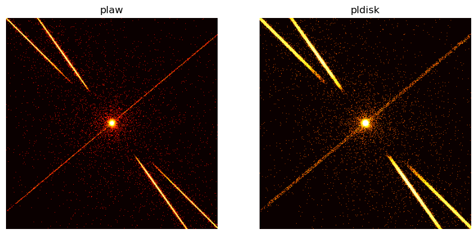
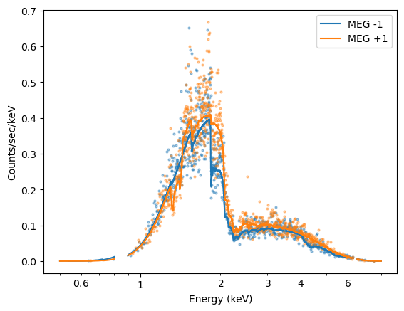
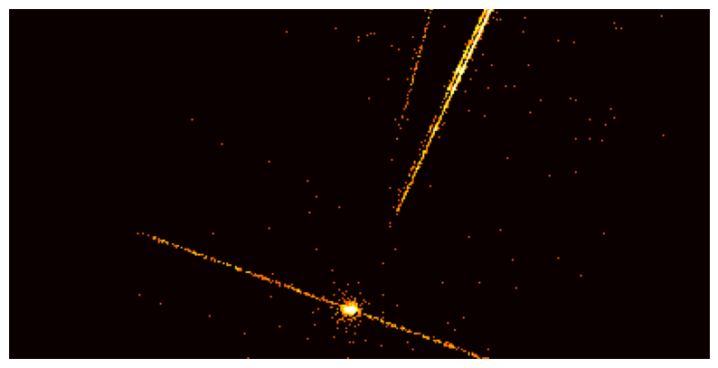

import numpy as np
from sherpa.astro import ui
# set source properties
ui.set_source(ui.xsphabs.a * ui.xspowerlaw.p)
a.nH = 1.
p.PhoIndex = 1.8
p.norm = 0.001
# get source
my_src = ui.get_source()
# set energy grid
bin_width = 0.003
energies = np.arange(0.03, 12., bin_width)
# evaluate source on energy grid with lower and upper bin edges
flux = my_src(energies, energies + bin_width)
# MARX input files only have one energy column, and the conventions is that
# this hold the UPPER edge of the bin.
# Also, we need to divide the flux by the bin width to obtain the flux density.
ui.save_arrays("plawflux.tbl", [energies + bin_width, flux / bin_width],
["keV","photons/s/cm**2/keV"], ascii=True, clobber=True)
my_src = ui.get_source()
print(str(my_src))
xsphabs.a * xspowerlaw.p
Param Type Value Min Max Units
----- ---- ----- --- --- -----
a.nH thawed 1 0 1e+06 10^22 atoms / cm^2
p.PhoIndex thawed 1.8 -3 10
p.norm thawed 0.001 0 1e+24
from utils import setup_marx
setup_marx()
import subprocess
out = subprocess.call('marx SourceFlux=-1 SpectrumType="FILE" SpectrumFile="plawflux.tbl" ' + \
'ExposureTime=100000 TStart=2012.5 ' + \
'OutputDir=plaw GratingType="NONE" DetectorType="ACIS-S" ' + \
'DitherModel="INTERNAL" RA_Nom=30 Dec_Nom=40 Roll_Nom=50 ' + \
'SourceRA=30 SourceDEC=40 ', shell=True)
MARX version 6.0.1, Copyright (C) 2002-2025 Massachusetts Institute of Technology
Reading binary HRMA optical constants
Reading scattering tables
Initializing ACIS-S detector...
Reading ACIS-I/S FEF File
Reading ACIS-S QE/Filter Files
Reading ACIS4 Contamination File
Reading ACIS5 Contamination File
Reading ACIS6 Contamination File
Reading ACIS7 Contamination File
Reading ACIS8 Contamination File
Reading ACIS9 Contamination File
[Using INTERNAL dither model]
Initializing source type POINT...
Reading spectrum from:
plawflux.tbl
Your spectrum has a total flux of 6.711790e-04 photons/cm^2/sec
System initialized.
Starting simulation. Exposure Time set to 1.000000e+05 seconds
Collecting 100000 photons...
100000 photons collected.
Reflecting from HRMA
Detecting with ACIS-S
Writing output to directory 'plaw' ...
Total photons: 100000, Total Photons detected: 16603, (efficiency: 0.166030)
(efficiency this iteration 0.166030) Total time: 65394.868274
Collecting 100000 photons...
52642 photons collected.
Reflecting from HRMA
Detecting with ACIS-S
Writing output to directory 'plaw' ...
Total photons: 152642, Total Photons detected: 25327, (efficiency: 0.165924)
(efficiency this iteration 0.165723) Total time: 100000.489965
subprocess.call("marx2fits plaw plaw_evt2.fits", shell=True)
Reading subpix file /Users/guenther/code/marx_installed/share/marx/data/caldb/acisD1999-07-22subpixN0001_marx.fits
Examining plaw/time.dat
Examining plaw/detector.dat
Examining plaw/energy.dat
Examining plaw/b_energy.dat
Examining plaw/xpos.dat
Examining plaw/ypos.dat
Examining plaw/zpos.dat
Examining plaw/xcos.dat
Examining plaw/ycos.dat
Examining plaw/zcos.dat
Examining plaw/xpixel.dat
Examining plaw/ypixel.dat
Examining plaw/pha.dat
Examining plaw/mirror.dat
Examining plaw/sky_ra.dat
Examining plaw/sky_dec.dat
Examining plaw/sky_roll.dat
Examining plaw/det_dy.dat
Examining plaw/det_dz.dat
Examining plaw/det_theta.dat
0
subprocess.call('marxasp MarxDir="plaw" OutputFile="plaw_asol1.fits"', shell=True)
0
from ciao_contrib import runtool as rt
# Extraction region parameters: circle of radius R at (X,Y)
X=4096.5
Y=4096.5
R=20.0
phagrid="pi=1:1024:1"
evtfile="plaw_evt2.fits"
asolfile="plaw_asol1.fits"
phafile="plaw_pha.fits"
rmffile="plaw_rmf.fits"
arffile="plaw_arf.fits"
asphistfile="plaw_asp.fits"
rt.asphist(infile=asolfile, outfile=asphistfile, evtfile=evtfile, clobber=True)
rt.dmextract(infile=f"{evtfile}[sky=Circle({X},{Y},{R})][bin {phagrid}]",
outfile=phafile, clobber=True)
# Select a CCD.
ccdid=7
detname=f"ACIS-{ccdid};UNIFORM;bpmask=0"
grating="NONE"
# For ACIS-I, use engrid="0.3:11.0:0.003". This reflects a limitation of mkrmf.
engrid="0.3:12.0:0.003"
rt.mkarf(mirror="hrma", detsubsys=detname, grating=grating,
outfile=arffile,
obsfile=evtfile, engrid=engrid, asphistfile=asphistfile,
sourcepixelx=X, sourcepixely=Y,
maskfile="NONE", pbkfile="NONE", dafile="NONE", clobber=True)
import os
# Mean chip position
chipx=221
chipy=532
fef=f"{os.environ['CALDB']}/data/chandra/acis/fef_pha/acisD2000-01-29fef_phaN0005.fits"
cxfilter=f"chipx_hi>={chipx},chipx_lo<={chipx}"
cyfilter=f"chipy_hi>={chipy},chipy_lo<={chipy}"
rt.mkrmf(infile=f"{fef}[ccd_id={ccdid},{cxfilter},{cyfilter}]",
outfile=rmffile, axis1=f"energy={engrid}",
axis2=phagrid, thresh=1e-8, clobber=True)
import matplotlib.pyplot as plt
ui.load_pha(phafile)
ui.load_rmf(rmffile)
ui.load_arf(arffile)
ui.group_counts(25)
ui.set_source(ui.xsphabs.a * ui.xspowerlaw.p)
a.nH = 0.001
p.PhoIndex = 1.8
p.norm = 0.1
ui.ignore(None, 0.4)
ui.ignore(10.0, None)
ui.fit()
ui.plot_fit_delchi(xlog=True, ylog=True)
plt.gcf().axes[0].set_title("Simulated spectrum and fit without pile-up")
dataset 1: 0.00146:14.9504 Energy (keV) (unchanged)
dataset 1: 0.00146:14.9504 -> 0.4526:14.9504 Energy (keV)
dataset 1: 0.4526:14.9504 -> 0.4526:9.1542 Energy (keV)
Dataset = 1
Method = levmar
Statistic = chi2gehrels
Initial fit statistic = 1.14309e+10
Final fit statistic = 254.297 at function evaluation 77
Data points = 350
Degrees of freedom = 347
Probability [Q-value] = 0.999945
Reduced statistic = 0.732846
Change in statistic = 1.14309e+10
a.nH 1.00568 +/- 0.0223382
p.PhoIndex 1.82733 +/- 0.0272754
p.norm 0.000995875 +/- 3.45246e-05
Text(0.5, 1.0, 'Simulated spectrum and fit without pile-up')
print(str(ui.get_fit_results()))
datasets = (1,)
itermethodname = none
methodname = levmar
statname = chi2gehrels
succeeded = True
parnames = ('a.nH', 'p.PhoIndex', 'p.norm')
parvals = (1.0056766408335713, 1.8273298959831403, 0.0009958754968162732)
statval = 254.2974651603365
istatval = 11430882391.33182
dstatval = 11430882137.034355
numpoints = 350
dof = 347
qval = 0.9999448262650639
rstat = 0.7328457209231599
message = successful termination
nfev = 77
subprocess.call("marxpileup MarxOutputDir=plaw", shell=True)
Reading ACIS-I/S FEF File
Opening plaw/b_energy.dat for read
Opening plaw/time.dat for read
Opening plaw/xpixel.dat for read
Opening plaw/ypixel.dat for read
Opening plaw/detector.dat for read
Opening plaw/energy.dat for read
Opening plaw/sky_ra.dat for read
Opening plaw/sky_dec.dat for read
Opening plaw/sky_roll.dat for read
Opening plaw/det_dy.dat for read
Opening plaw/det_dz.dat for read
Opening plaw/det_theta.dat for read
25327 input events available (across all CCDs)
Opening plaw/pileup/xpixel.dat for write
Opening plaw/pileup/ypixel.dat for write
Opening plaw/pileup/time.dat for write
Opening plaw/pileup/frame.dat for write
Opening plaw/pileup/b_energy.dat for write
Opening plaw/pileup/detector.dat for write
Opening plaw/pileup/sky_ra.dat for write
Opening plaw/pileup/sky_dec.dat for write
Opening plaw/pileup/sky_roll.dat for write
Opening plaw/pileup/det_dy.dat for write
Opening plaw/pileup/det_dz.dat for write
Opening plaw/pileup/det_theta.dat for write
Opening plaw/pileup/nphotons.dat for write
Opening plaw/pileup/pha.dat for write
Percent Completed: 0
Percent Completed: 1
Percent Completed: 2
Percent Completed: 3
Percent Completed: 4
Percent Completed: 5
Percent Completed: 6
Percent Completed: 7
Percent Completed: 8
Percent Completed: 9
Percent Completed: 10
Percent Completed: 11
Percent Completed: 12
Percent Completed: 13
Percent Completed: 14
Percent Completed: 15
Percent Completed: 16
Percent Completed: 17
Percent Completed: 18
Percent Completed: 19
Percent Completed: 20
Percent Completed: 21
Percent Completed: 22
Percent Completed: 23
Percent Completed: 24
Percent Completed: 25
Percent Completed: 26
Percent Completed: 27
Percent Completed: 28
Percent Completed: 29
Percent Completed: 30
Percent Completed: 31
Percent Completed: 32
Percent Completed: 33
Percent Completed: 34
Percent Completed: 35
Percent Completed: 36
Percent Completed: 37
Percent Completed: 38
Percent Completed: 39
Percent Completed: 40
Percent Completed: 41
Percent Completed: 42
Percent Completed: 43
Percent Completed: 44
Percent Completed: 45
Percent Completed: 46
Percent Completed: 47
Percent Completed: 48
Percent Completed: 49
Percent Completed: 50
Percent Completed: 51
Percent Completed: 52
Percent Completed: 53
Percent Completed: 54
Percent Completed: 55
Percent Completed: 56
Percent Completed: 57
Percent Completed: 58
Percent Completed: 59
Percent Completed: 60
Percent Completed: 61
Percent Completed: 62
Percent Completed: 63
Percent Completed: 64
Percent Completed: 65
Percent Completed: 66
Percent Completed: 67
Percent Completed: 68
Percent Completed: 69
Percent Completed: 70
Percent Completed: 71
Percent Completed: 72
Percent Completed: 73
Percent Completed: 74
Percent Completed: 75
Percent Completed: 76
Percent Completed: 77
Percent Completed: 78
Percent Completed: 79
Percent Completed: 80
Percent Completed: 81
Percent Completed: 82
Percent Completed: 83
Percent Completed: 84
Percent Completed: 85
Percent Completed: 86
Percent Completed: 87
Percent Completed: 88
Percent Completed: 89
Percent Completed: 90
Percent Completed: 91
Percent Completed: 92
Percent Completed: 93
Percent Completed: 94
Percent Completed: 95
Percent Completed: 96
Percent Completed: 97
Percent Completed: 98
Percent Completed: 99
Percent Completed: 100
Total Number Input: 25327
Total Number Detected: 16224
Efficiency: 6.405812e-01
0
subprocess.call("marx2fits --pileup plaw/pileup plaw_pileup_evt2.fits", shell=True)
Reading subpix file /Users/guenther/code/marx_installed/share/marx/data/caldb/acisD1999-07-22subpixN0001_marx.fits
Examining plaw/pileup/time.dat
Examining plaw/pileup/detector.dat
Examining plaw/pileup/b_energy.dat
Examining plaw/pileup/xpixel.dat
Examining plaw/pileup/ypixel.dat
Examining plaw/pileup/pha.dat
Examining plaw/pileup/frame.dat
Examining plaw/pileup/sky_ra.dat
Examining plaw/pileup/sky_dec.dat
Examining plaw/pileup/sky_roll.dat
Examining plaw/pileup/det_dy.dat
Examining plaw/pileup/det_dz.dat
Examining plaw/pileup/det_theta.dat
0
# Smaller radius this time
R=4.0
evtfile="plaw_pileup_evt2.fits"
phafile="plaw_pileup_pha.fits"
rt.dmextract(infile=f"{evtfile}[sky=Circle({X},{Y},{R})][bin {phagrid}]",
outfile=phafile, clobber=True)
ui.load_pha("pileup", "plaw_pileup_pha.fits")
ui.load_rmf("pileup", rmffile)
ui.load_arf("pileup", arffile)
ui.group_counts("pileup", 25)
ui.set_source("pileup", ui.xsphabs.apileup * ui.xspowerlaw.pileup)
a.nH = 1
p.PhoIndex = 1.8
p.norm = 0.001
ui.ignore(None, 0.4)
ui.ignore(10.0, None)
ui.fit("pileup")
# Text says it prodices poor fit, but chi^2 seems to be OK
dataset pileup: 0.00146:14.9504 Energy (keV) (unchanged)
dataset 1: 0.4526:9.1542 Energy (keV) (unchanged)
dataset pileup: 0.00146:14.9504 -> 0.4672:14.9504 Energy (keV)
dataset 1: 0.4526:9.1542 Energy (keV) (unchanged)
dataset pileup: 0.4672:14.9504 -> 0.4672:9.7528 Energy (keV)
Dataset = pileup
Method = levmar
Statistic = chi2gehrels
Initial fit statistic = 1.66559e+11
Final fit statistic = 258.828 at function evaluation 29
Data points = 313
Degrees of freedom = 310
Probability [Q-value] = 0.984355
Reduced statistic = 0.834929
Change in statistic = 1.66559e+11
apileup.nH 0.909879 +/- 0.0294464
pileup.PhoIndex 1.51389 +/- 0.0349611
pileup.norm 0.000423556 +/- 1.93584e-05
ui.set_pileup_model("pileup", jdpileup.jdp)
---------------------------------------------------------------------------
NameError Traceback (most recent call last)
Cell In[16], line 1
----> 1 ui.set_pileup_model("pileup", jdpileup.jdp)
NameError: name 'jdpileup' is not defined
ui.fit("pileup")
Dataset = pileup
Method = levmar
Statistic = chi2gehrels
Initial fit statistic = 1186.73
Final fit statistic = 214.67 at function evaluation 286
Data points = 309
Degrees of freedom = 304
Probability [Q-value] = 0.999972
Reduced statistic = 0.706152
Change in statistic = 972.055
jdp.alpha 0.261174 +/- 2.42783
jdp.f 0.901038 +/- 1.28573
apileup.nH 1.01689 +/- 0.0450518
pileup.PhoIndex 1.84317 +/- 0.10787
pileup.norm 0.00106204 +/- 0.00305591
ui.plot_data(yerrorbars=False, color='C0', alpha=0.4, xlog=True, ylog=True)
ui.plot_data("pileup", yerrorbars=False, overplot=True,color='C1', alpha=0.4)
ui.plot_model(color='C0', overplot=True, label='data and model without pileup')
ui.plot_model("pileup", overplot=True, color="C1", label='data and model with pileup')
plt.legend()
plt.title("The effect of pile-up on the spectrum")
Text(0.5, 1.0, 'The effect of pile-up on the spectrum')
from sherpa.astro import ui
# set source properties
ui.set_source(ui.xsvapec.a1 + ui.xsvapec.a2)
a1.norm, a2.norm = 0.016, 0.0156
a1.kT, a2.kT = 8.5, 2.8 # in keV
a2.Ne = a1.Ne
a2.Fe = a1.Fe
a1.Ne = 2
a1.Fe = 0.2
my_src = ui.get_source()
import matplotlib.pyplot as plt
import numpy as np
en = np.arange(0.4, 10.0, 0.01)
plt.loglog(en, my_src(en) / 0.01, label='source model')
[<matplotlib.lines.Line2D at 0x152c62900>]
import numpy as np
# set energy grid
wavelength = np.linspace(1., 30., 16384) # in Angstrom
# convert to keV
energies = 12.39842 / wavelength # keV
# for simplicity, reverse to be array ascending in energy
energies = energies[::-1]
# evaluate source on energy grid with lower and upper bin edges
flux = my_src(energies[:-1], energies[1:])
# MARX input files only have one energy column, and the conventions is that
# this hold the UPPER edge of the bin.
# Also, we need to divide the flux by the bin width to obtain the flux density.
bin_width = energies[1:] - energies[:-1]
ui.save_arrays("apedflux.tbl", [energies[1:], flux / bin_width],
["keV","photons/s/cm**2/keV"], ascii=True, clobber=True)
midbin = 0.5 * (energies[:-1] + energies[1:])
plt.loglog(midbin, flux / bin_width)
plt.xlabel("Energy (keV)")
plt.ylabel("Flux (photons/s/cm$^2$/keV)")
Text(0, 0.5, 'Flux (photons/s/cm$^2$/keV)')
import os
os.environ['PATH'] = '/Users/guenther/code/marx_installed/bin/:' + os.environ['PATH']
os.environ['PFILES'] = '/Users/guenther/cxcds_param4;/Users/guenther/miniforge3/envs/ciao-4.18.b2/param:/Users/guenther/code/marx_installed/share/marx/pfiles'
import subprocess
out = subprocess.call('marx SourceFlux=-1 SpectrumType="FILE" ' + \
'SpectrumFile="apedflux.tbl" ExposureTime=80000 OutputDir=aped ' +\
'DitherModel="INTERNAL" TStart=2005 ' +\
'GratingType="HETG" DetectorType="ACIS-S"', shell=True)
MARX version 6.0.0, Copyright (C) 2002-2025 Massachusetts Institute of Technology
Reading binary HRMA optical constants
Reading scattering tables
Initializing ACIS-S detector...
Reading ACIS-I/S FEF File
Reading ACIS-S QE/Filter Files
Reading ACIS4 Contamination File
Reading ACIS5 Contamination File
Reading ACIS6 Contamination File
Reading ACIS7 Contamination File
Reading ACIS8 Contamination File
Reading ACIS9 Contamination File
[Using INTERNAL dither model]
Initializing source type POINT...
Reading spectrum from:
apedflux.tbl
Your spectrum has a total flux of 1.987641e-02 photons/cm^2/sec
System initialized.
Starting simulation. Exposure Time set to 8.000000e+04 seconds
Collecting 100000 photons...
100000 photons collected.
Reflecting from HRMA
Diffracting from HETG.
Detecting with ACIS-S
Writing output to directory 'aped' ...
Total photons: 100000, Total Photons detected: 4757, (efficiency: 0.047570)
(efficiency this iteration 0.047570) Total time: 2202.374328
Collecting 100000 photons...
100000 photons collected.
Reflecting from HRMA
Diffracting from HETG.
Detecting with ACIS-S
Writing output to directory 'aped' ...
Total photons: 200000, Total Photons detected: 9393, (efficiency: 0.046965)
(efficiency this iteration 0.046360) Total time: 4425.175526
Collecting 100000 photons...
100000 photons collected.
Reflecting from HRMA
Diffracting from HETG.
Detecting with ACIS-S
Writing output to directory 'aped' ...
Total photons: 300000, Total Photons detected: 14102, (efficiency: 0.047007)
(efficiency this iteration 0.047090) Total time: 6635.143335
Collecting 100000 photons...
100000 photons collected.
Reflecting from HRMA
Diffracting from HETG.
Detecting with ACIS-S
Writing output to directory 'aped' ...
Total photons: 400000, Total Photons detected: 18771, (efficiency: 0.046927)
(efficiency this iteration 0.046690) Total time: 8847.334303
Collecting 100000 photons...
100000 photons collected.
Reflecting from HRMA
Diffracting from HETG.
Detecting with ACIS-S
Writing output to directory 'aped' ...
Total photons: 500000, Total Photons detected: 23450, (efficiency: 0.046900)
(efficiency this iteration 0.046790) Total time: 11067.741647
Collecting 100000 photons...
100000 photons collected.
Reflecting from HRMA
Diffracting from HETG.
Detecting with ACIS-S
Writing output to directory 'aped' ...
Total photons: 600000, Total Photons detected: 28131, (efficiency: 0.046885)
(efficiency this iteration 0.046810) Total time: 13275.827760
Collecting 100000 photons...
100000 photons collected.
Reflecting from HRMA
Diffracting from HETG.
Detecting with ACIS-S
Writing output to directory 'aped' ...
Total photons: 700000, Total Photons detected: 32900, (efficiency: 0.047000)
(efficiency this iteration 0.047690) Total time: 15491.956594
Collecting 100000 photons...
100000 photons collected.
Reflecting from HRMA
Diffracting from HETG.
Detecting with ACIS-S
Writing output to directory 'aped' ...
Total photons: 800000, Total Photons detected: 37597, (efficiency: 0.046996)
(efficiency this iteration 0.046970) Total time: 17699.736941
Collecting 100000 photons...
100000 photons collected.
Reflecting from HRMA
Diffracting from HETG.
Detecting with ACIS-S
Writing output to directory 'aped' ...
Total photons: 900000, Total Photons detected: 42441, (efficiency: 0.047157)
(efficiency this iteration 0.048440) Total time: 19917.623986
Collecting 100000 photons...
100000 photons collected.
Reflecting from HRMA
Diffracting from HETG.
Detecting with ACIS-S
Writing output to directory 'aped' ...
Total photons: 1000000, Total Photons detected: 47198, (efficiency: 0.047198)
(efficiency this iteration 0.047570) Total time: 22124.999346
Collecting 100000 photons...
100000 photons collected.
Reflecting from HRMA
Diffracting from HETG.
Detecting with ACIS-S
Writing output to directory 'aped' ...
Total photons: 1100000, Total Photons detected: 51876, (efficiency: 0.047160)
(efficiency this iteration 0.046780) Total time: 24349.740647
Collecting 100000 photons...
100000 photons collected.
Reflecting from HRMA
Diffracting from HETG.
Detecting with ACIS-S
Writing output to directory 'aped' ...
Total photons: 1200000, Total Photons detected: 56532, (efficiency: 0.047110)
(efficiency this iteration 0.046560) Total time: 26564.190836
Collecting 100000 photons...
100000 photons collected.
Reflecting from HRMA
Diffracting from HETG.
Detecting with ACIS-S
Writing output to directory 'aped' ...
Total photons: 1300000, Total Photons detected: 61258, (efficiency: 0.047122)
(efficiency this iteration 0.047260) Total time: 28783.210257
Collecting 100000 photons...
100000 photons collected.
Reflecting from HRMA
Diffracting from HETG.
Detecting with ACIS-S
Writing output to directory 'aped' ...
Total photons: 1400000, Total Photons detected: 66043, (efficiency: 0.047174)
(efficiency this iteration 0.047850) Total time: 31005.011023
Collecting 100000 photons...
100000 photons collected.
Reflecting from HRMA
Diffracting from HETG.
Detecting with ACIS-S
Writing output to directory 'aped' ...
Total photons: 1500000, Total Photons detected: 70775, (efficiency: 0.047183)
(efficiency this iteration 0.047320) Total time: 33229.474773
Collecting 100000 photons...
100000 photons collected.
Reflecting from HRMA
Diffracting from HETG.
Detecting with ACIS-S
Writing output to directory 'aped' ...
Total photons: 1600000, Total Photons detected: 75482, (efficiency: 0.047176)
(efficiency this iteration 0.047070) Total time: 35451.365305
Collecting 100000 photons...
100000 photons collected.
Reflecting from HRMA
Diffracting from HETG.
Detecting with ACIS-S
Writing output to directory 'aped' ...
Total photons: 1700000, Total Photons detected: 80201, (efficiency: 0.047177)
(efficiency this iteration 0.047190) Total time: 37669.913249
Collecting 100000 photons...
100000 photons collected.
Reflecting from HRMA
Diffracting from HETG.
Detecting with ACIS-S
Writing output to directory 'aped' ...
Total photons: 1800000, Total Photons detected: 84939, (efficiency: 0.047188)
(efficiency this iteration 0.047380) Total time: 39886.020145
Collecting 100000 photons...
100000 photons collected.
Reflecting from HRMA
Diffracting from HETG.
Detecting with ACIS-S
Writing output to directory 'aped' ...
Total photons: 1900000, Total Photons detected: 89729, (efficiency: 0.047226)
(efficiency this iteration 0.047900) Total time: 42090.692628
Collecting 100000 photons...
100000 photons collected.
Reflecting from HRMA
Diffracting from HETG.
Detecting with ACIS-S
Writing output to directory 'aped' ...
Total photons: 2000000, Total Photons detected: 94344, (efficiency: 0.047172)
(efficiency this iteration 0.046150) Total time: 44307.846876
Collecting 100000 photons...
100000 photons collected.
Reflecting from HRMA
Diffracting from HETG.
Detecting with ACIS-S
Writing output to directory 'aped' ...
Total photons: 2100000, Total Photons detected: 99195, (efficiency: 0.047236)
(efficiency this iteration 0.048510) Total time: 46527.914951
Collecting 100000 photons...
100000 photons collected.
Reflecting from HRMA
Diffracting from HETG.
Detecting with ACIS-S
Writing output to directory 'aped' ...
Total photons: 2200000, Total Photons detected: 103964, (efficiency: 0.047256)
(efficiency this iteration 0.047690) Total time: 48746.912154
Collecting 100000 photons...
100000 photons collected.
Reflecting from HRMA
Diffracting from HETG.
Detecting with ACIS-S
Writing output to directory 'aped' ...
Total photons: 2300000, Total Photons detected: 108664, (efficiency: 0.047245)
(efficiency this iteration 0.047000) Total time: 50967.784879
Collecting 100000 photons...
100000 photons collected.
Reflecting from HRMA
Diffracting from HETG.
Detecting with ACIS-S
Writing output to directory 'aped' ...
Total photons: 2400000, Total Photons detected: 113285, (efficiency: 0.047202)
(efficiency this iteration 0.046210) Total time: 53184.617773
Collecting 100000 photons...
100000 photons collected.
Reflecting from HRMA
Diffracting from HETG.
Detecting with ACIS-S
Writing output to directory 'aped' ...
Total photons: 2500000, Total Photons detected: 117900, (efficiency: 0.047160)
(efficiency this iteration 0.046150) Total time: 55399.770354
Collecting 100000 photons...
100000 photons collected.
Reflecting from HRMA
Diffracting from HETG.
Detecting with ACIS-S
Writing output to directory 'aped' ...
Total photons: 2600000, Total Photons detected: 122566, (efficiency: 0.047141)
(efficiency this iteration 0.046660) Total time: 57612.359547
Collecting 100000 photons...
100000 photons collected.
Reflecting from HRMA
Diffracting from HETG.
Detecting with ACIS-S
Writing output to directory 'aped' ...
Total photons: 2700000, Total Photons detected: 127218, (efficiency: 0.047118)
(efficiency this iteration 0.046520) Total time: 59819.457777
Collecting 100000 photons...
100000 photons collected.
Reflecting from HRMA
Diffracting from HETG.
Detecting with ACIS-S
Writing output to directory 'aped' ...
Total photons: 2800000, Total Photons detected: 131980, (efficiency: 0.047136)
(efficiency this iteration 0.047620) Total time: 62042.800776
Collecting 100000 photons...
100000 photons collected.
Reflecting from HRMA
Diffracting from HETG.
Detecting with ACIS-S
Writing output to directory 'aped' ...
Total photons: 2900000, Total Photons detected: 136549, (efficiency: 0.047086)
(efficiency this iteration 0.045690) Total time: 64263.823091
Collecting 100000 photons...
100000 photons collected.
Reflecting from HRMA
Diffracting from HETG.
Detecting with ACIS-S
Writing output to directory 'aped' ...
Total photons: 3000000, Total Photons detected: 141200, (efficiency: 0.047067)
(efficiency this iteration 0.046510) Total time: 66486.270816
Collecting 100000 photons...
100000 photons collected.
Reflecting from HRMA
Diffracting from HETG.
Detecting with ACIS-S
Writing output to directory 'aped' ...
Total photons: 3100000, Total Photons detected: 145950, (efficiency: 0.047081)
(efficiency this iteration 0.047500) Total time: 68700.957515
Collecting 100000 photons...
100000 photons collected.
Reflecting from HRMA
Diffracting from HETG.
Detecting with ACIS-S
Writing output to directory 'aped' ...
Total photons: 3200000, Total Photons detected: 150687, (efficiency: 0.047090)
(efficiency this iteration 0.047370) Total time: 70910.769184
Collecting 100000 photons...
100000 photons collected.
Reflecting from HRMA
Diffracting from HETG.
Detecting with ACIS-S
Writing output to directory 'aped' ...
Total photons: 3300000, Total Photons detected: 155220, (efficiency: 0.047036)
(efficiency this iteration 0.045330) Total time: 73125.488799
Collecting 100000 photons...
100000 photons collected.
Reflecting from HRMA
Diffracting from HETG.
Detecting with ACIS-S
Writing output to directory 'aped' ...
Total photons: 3400000, Total Photons detected: 159871, (efficiency: 0.047021)
(efficiency this iteration 0.046510) Total time: 75336.695164
Collecting 100000 photons...
100000 photons collected.
Reflecting from HRMA
Diffracting from HETG.
Detecting with ACIS-S
Writing output to directory 'aped' ...
Total photons: 3500000, Total Photons detected: 164627, (efficiency: 0.047036)
(efficiency this iteration 0.047560) Total time: 77555.658971
Collecting 100000 photons...
100000 photons collected.
Reflecting from HRMA
Diffracting from HETG.
Detecting with ACIS-S
Writing output to directory 'aped' ...
Total photons: 3600000, Total Photons detected: 169322, (efficiency: 0.047034)
(efficiency this iteration 0.046950) Total time: 79781.188130
Collecting 100000 photons...
9704 photons collected.
Reflecting from HRMA
Diffracting from HETG.
Detecting with ACIS-S
Writing output to directory 'aped' ...
Total photons: 3609704, Total Photons detected: 169754, (efficiency: 0.047027)
(efficiency this iteration 0.044518) Total time: 80000.020676
evtfile="aped_evt2.fits"
out = subprocess.call(f'marx2fits aped {evtfile}', shell=True)
Reading subpix file /Users/guenther/code/marx_installed/share/marx/data/caldb/acisD1999-07-22subpixN0001_marx.fits
Examining aped/time.dat
Examining aped/detector.dat
Examining aped/energy.dat
Examining aped/b_energy.dat
Examining aped/xpos.dat
Examining aped/ypos.dat
Examining aped/zpos.dat
Examining aped/xcos.dat
Examining aped/ycos.dat
Examining aped/zcos.dat
Examining aped/xpixel.dat
Examining aped/ypixel.dat
Examining aped/pha.dat
Examining aped/order.dat
Examining aped/mirror.dat
Examining aped/sky_ra.dat
Examining aped/sky_dec.dat
Examining aped/sky_roll.dat
Examining aped/det_dy.dat
Examining aped/det_dz.dat
Examining aped/det_theta.dat
asol1file="aped_asol1.fits"
out = subprocess.call(f'marxasp MarxDir="aped" OutputFile="{asol1file}"', shell=True)
import ciao_contrib.runtool as rt
rt.tgdetect(infile=evtfile, OBI_srclist_file="NONE", outfile="letgplaw_src1a.fits", clobber=True)
evt1afile = "aped_evt1a.fits"
reg1afile = "aped_reg1a.fits"
pha2file = "aped_pha2.fits"
srcfile = "src1a.fits"
asol1file="aped_asol1.fits"
rt.tgdetect(infile=evtfile, outfile="letgplaw_src1a.fits", clobber=True)
rt.tg_create_mask(infile=evtfile, outfile=reg1afile, input_pos_tab="letgplaw_src1a.fits",
clobber=True)
rt.tg_resolve_events(infile=evtfile, outfile=evt1afile, regionfile=reg1afile,
acaofffile=asol1file, clobber=True)
rt.tgextract(infile=evt1afile, outfile=pha2file, tg_order_list="-1,+1", tg_srcid_list=1,
clobber=True)
#rt.tgextract(infile=evt1afile, outfile=pha2file, tg_order_list="-1,+1",
# ancrfile="none", respfile="NONE", inregion_file="none", clobber=True,
# tg_srcid_list=1, outfile_type="pha_typeII", tg_part_list='header_value')
rt.mkgrmf(grating_arm="MEG", order=1, outfile="meg1.rmf", srcid=1, detsubsys="ACIS-S3", obsfile=evtfile, regionfile=pha2file, clobber=True)
rt.fullgarf(phafile=pha2file, pharow=4, evtfile=evtfile, asol=asol1file, engrid="grid(meg1.rmf[cols ENERG_LO,ENERG_HI])",
ardlibqual=";UNIFORM;bpmask=0", clobber=True, verbose=0)
Will use /Users/guenther/cxcds_param4/fullgarf.par for the parameter file.
/Users/guenther/cxcds_param4/fullgarf.par contains 15 parameters . . .
Getting the pha file type . . .
Grating arm is MEG, order=1
Source location is X=4017.785400390625, Y=4141.4326171875
Detector is ACIS
Will run asphist for ccd_id= 6 7 8 9
_ah6.fits exists . . . will clobber
asphist infile=aped_asol1.fits outfile=_ah6.fits evtfile=aped_evt2.fits[ccd_id=6] dtffile=aped_evt2.fits clobber=yes mode=hl
_ah7.fits exists . . . will clobber
asphist infile=aped_asol1.fits outfile=_ah7.fits evtfile=aped_evt2.fits[ccd_id=7] dtffile=aped_evt2.fits clobber=yes mode=hl
_ah8.fits exists . . . will clobber
asphist infile=aped_asol1.fits outfile=_ah8.fits evtfile=aped_evt2.fits[ccd_id=8] dtffile=aped_evt2.fits clobber=yes mode=hl
_ah9.fits exists . . . will clobber
asphist infile=aped_asol1.fits outfile=_ah9.fits evtfile=aped_evt2.fits[ccd_id=9] dtffile=aped_evt2.fits clobber=yes mode=hl
Finished processing aspect histograms for ccd_id= 6 7 8 9
Will run mkgarf for the same ccd_id list
_S2_MEG_1.fits exists . . . will clobber
mkgarf detsubsys=ACIS-S2;UNIFORM;bpmask=0 order=1 grating_arm=MEG outfile=_S2_MEG_1.fits asphistfile=_ah6.fits[ASPHIST] obsfile=aped_evt2.fits engrid=grid(meg1.rmf[cols ENERG_LO,ENERG_HI]) osipfile=CALDB dafile=CALDB pbkfile= maskfile= mirror=HRMA sourcepixelx=4017.785400390625 sourcepixely=4141.4326171875 mode=hl verb=0 clobber=yes
*** WARNING: The ARF was computed to be zero at all the specified energies.
This is probably due to an incorrect source position
_S3_MEG_1.fits exists . . . will clobber
mkgarf detsubsys=ACIS-S3;UNIFORM;bpmask=0 order=1 grating_arm=MEG outfile=_S3_MEG_1.fits asphistfile=_ah7.fits[ASPHIST] obsfile=aped_evt2.fits engrid=grid(meg1.rmf[cols ENERG_LO,ENERG_HI]) osipfile=CALDB dafile=CALDB pbkfile= maskfile= mirror=HRMA sourcepixelx=4017.785400390625 sourcepixely=4141.4326171875 mode=hl verb=0 clobber=yes
_S4_MEG_1.fits exists . . . will clobber
mkgarf detsubsys=ACIS-S4;UNIFORM;bpmask=0 order=1 grating_arm=MEG outfile=_S4_MEG_1.fits asphistfile=_ah8.fits[ASPHIST] obsfile=aped_evt2.fits engrid=grid(meg1.rmf[cols ENERG_LO,ENERG_HI]) osipfile=CALDB dafile=CALDB pbkfile= maskfile= mirror=HRMA sourcepixelx=4017.785400390625 sourcepixely=4141.4326171875 mode=hl verb=0 clobber=yes
_S5_MEG_1.fits exists . . . will clobber
mkgarf detsubsys=ACIS-S5;UNIFORM;bpmask=0 order=1 grating_arm=MEG outfile=_S5_MEG_1.fits asphistfile=_ah9.fits[ASPHIST] obsfile=aped_evt2.fits engrid=grid(meg1.rmf[cols ENERG_LO,ENERG_HI]) osipfile=CALDB dafile=CALDB pbkfile= maskfile= mirror=HRMA sourcepixelx=4017.785400390625 sourcepixely=4141.4326171875 mode=hl verb=0 clobber=yes
*** WARNING: OSIP file contains invalid data for the region
512<=CHIPX<=768 608<=CHIPY<=640 at 0.1 keV.
*** WARNING: OSIP file contains invalid data for the region
512<=CHIPX<=768 608<=CHIPY<=640 at 0.277 keV.
Finished processing grating arfs for ccd_id= 6 7 8 9
dmarfadd @thisfile.istemporary MEG_1_garf.fits
MEG_1_garf.fits already exists . . . will clobber
/Users/guenther/miniforge3/envs/ciao-4.18.b2/bin/fullgarf finished.
ui.load_pha(pha2file)
ui.load_rmf(4, "meg1.rmf")
ui.load_arf(4, "MEG_1_garf.fits")
ui.set_analysis(4, "wave")
ui.notice_id(4, 4., 25.)
ui.plot_data(4, yerrorbars=False, linestyle='solid', marker=None)
WARNING: systematic errors were not found in file 'aped_pha2.fits'
statistical errors were found in file 'aped_pha2.fits'
but not used; to use them, re-read with use_errors=True
read background_up into a dataset from file aped_pha2.fits
read background_down into a dataset from file aped_pha2.fits
Multiple data sets have been input: 1-4
dataset 4: 1:41.96 Wavelength (Angstrom)
dataset 4: 1:41.96 -> 4:25 Wavelength (Angstrom)
ui.list_data_ids()
[1, 2, 3, 4]
import numpy as np
from sherpa.astro import ui
# set source properties
ui.set_source(ui.xsphabs.a * ui.xspowerlaw.p + ui.xsgaussian.l1 + ui.xsgaussian.l2)
a.nH = 0.8
p.PhoIndex = 1.2
p.norm = 0.02
l1.lineE = 6.4038 # keV
l2.lineE = 0.8486 # keV
# Make the lines have small but non-zero widths
l1.sigma = 0.05 # about 2300 km/s
l2.sigma = 0.005 # about 1800 km/s
l1.norm = 1e-4
l2.norm = 2e-4
# get source
my_src = ui.get_source()
# set energy grid
bin_width = 0.01
energies = np.arange(0.03, 12., bin_width)
# evaluate source on energy grid with lower and upper bin edges
flux = my_src(energies, energies + bin_width)
# MARX input files only have one energy column, and the conventions is that
# this hold the UPPER edge of the bin.
# Also, we need to divide the flux by the bin width to obtain the flux density.
ui.save_arrays("source_flux.tbl", [energies + bin_width, flux / bin_width],
["keV","photons/s/cm**2/keV"], ascii=True, clobber=True)
ui.get_source()
<BinaryOpModel model instance 'xsphabs.a * xspowerlaw.p + xsgaussian.l1 + xsgaussian.l2'>
Model
| Component | Parameter | Thawed | Value | Min | Max | Units |
|---|---|---|---|---|---|---|
| xsphabs.a | nH | 0.8 | 0.0 | 1000000.0 | 10^22 atoms / cm^2 | |
| xspowerlaw.p | PhoIndex | 1.2 | -3.0 | 10.0 | ||
| norm | 0.02 | 0.0 | 1e+24 | |||
| xsgaussian.l1 | LineE | 6.5 | 0.0 | 1000000.0 | keV | |
| Sigma | 0.1 | 0.0 | 20.0 | keV | ||
| norm | 1.0 | 0.0 | 1e+24 | |||
| xsgaussian.l2 | LineE | 6.5 | 0.0 | 1000000.0 | keV | |
| Sigma | 0.1 | 0.0 | 20.0 | keV | ||
| norm | 1.0 | 0.0 | 1e+24 |
from astropy import units as u
linee = 6.4038 * u.keV
300000*(0.005 / 0.85)
1764.7058823529412
import subprocess
marxpars = {
# set the spectrum file to use:
"SourceFlux": -1,
"SpectrumType": "FILE",
"SpectrumFile": "source_flux.tbl",
# Set other parameters of the simulation:
# Using 50 ks
"ExposureTime": 50000,
"OutputDir": "hetg_plaw",
"DitherModel": "INTERNAL",
# Use the HETG with ACIS-S:
"GratingType": "HETG",
"DetectorType": "ACIS-S",
# Some other parameters it can be useful to set:
# Date of observation (effects ACIS QE)
"TStart": 2009.5,
# Roll of the observation: 0 puts average dispersion along E -- W.
"Roll_Nom": 50,
# Pointing RA/DEC and source position (degrees)
"RA_Nom": 250.000,
"Dec_Nom": -54.000,
"SourceRA": 250.000,
"SourceDEC": -54.000,
}
marx_cmd = 'marx ' + ' '.join([f'{k}={v}' for k, v in marxpars.items()])
out = subprocess.call(marx_cmd, shell=True)
# The variable "out" catches the return code here. A value of 0 means success.
assert out == 0
MARX version 6.0.0, Copyright (C) 2002-2025 Massachusetts Institute of Technology
Reading binary HRMA optical constants
Reading scattering tables
Initializing ACIS-S detector...
Reading ACIS-I/S FEF File
Reading ACIS-S QE/Filter Files
Reading ACIS4 Contamination File
Reading ACIS5 Contamination File
Reading ACIS6 Contamination File
Reading ACIS7 Contamination File
Reading ACIS8 Contamination File
Reading ACIS9 Contamination File
[Using INTERNAL dither model]
Initializing source type POINT...
Reading spectrum from:
source_flux.tbl
Your spectrum has a total flux of 3.052611e-02 photons/cm^2/sec
System initialized.
Starting simulation. Exposure Time set to 5.000000e+04 seconds
Collecting 100000 photons...
100000 photons collected.
Reflecting from HRMA
Diffracting from HETG.
Detecting with ACIS-S
Writing output to directory 'hetg_plaw' ...
Total photons: 100000, Total Photons detected: 6908, (efficiency: 0.069080)
(efficiency this iteration 0.069080) Total time: 1440.724514
Collecting 100000 photons...
100000 photons collected.
Reflecting from HRMA
Diffracting from HETG.
Detecting with ACIS-S
Writing output to directory 'hetg_plaw' ...
Total photons: 200000, Total Photons detected: 13889, (efficiency: 0.069445)
(efficiency this iteration 0.069810) Total time: 2887.577579
Collecting 100000 photons...
100000 photons collected.
Reflecting from HRMA
Diffracting from HETG.
Detecting with ACIS-S
Writing output to directory 'hetg_plaw' ...
Total photons: 300000, Total Photons detected: 20808, (efficiency: 0.069360)
(efficiency this iteration 0.069190) Total time: 4334.628669
Collecting 100000 photons...
100000 photons collected.
Reflecting from HRMA
Diffracting from HETG.
Detecting with ACIS-S
Writing output to directory 'hetg_plaw' ...
Total photons: 400000, Total Photons detected: 27874, (efficiency: 0.069685)
(efficiency this iteration 0.070660) Total time: 5781.483174
Collecting 100000 photons...
100000 photons collected.
Reflecting from HRMA
Diffracting from HETG.
Detecting with ACIS-S
Writing output to directory 'hetg_plaw' ...
Total photons: 500000, Total Photons detected: 34883, (efficiency: 0.069766)
(efficiency this iteration 0.070090) Total time: 7233.668109
Collecting 100000 photons...
100000 photons collected.
Reflecting from HRMA
Diffracting from HETG.
Detecting with ACIS-S
Writing output to directory 'hetg_plaw' ...
Total photons: 600000, Total Photons detected: 41881, (efficiency: 0.069802)
(efficiency this iteration 0.069980) Total time: 8678.007516
Collecting 100000 photons...
100000 photons collected.
Reflecting from HRMA
Diffracting from HETG.
Detecting with ACIS-S
Writing output to directory 'hetg_plaw' ...
Total photons: 700000, Total Photons detected: 48776, (efficiency: 0.069680)
(efficiency this iteration 0.068950) Total time: 10123.460057
Collecting 100000 photons...
100000 photons collected.
Reflecting from HRMA
Diffracting from HETG.
Detecting with ACIS-S
Writing output to directory 'hetg_plaw' ...
Total photons: 800000, Total Photons detected: 55583, (efficiency: 0.069479)
(efficiency this iteration 0.068070) Total time: 11564.633687
Collecting 100000 photons...
100000 photons collected.
Reflecting from HRMA
Diffracting from HETG.
Detecting with ACIS-S
Writing output to directory 'hetg_plaw' ...
Total photons: 900000, Total Photons detected: 62596, (efficiency: 0.069551)
(efficiency this iteration 0.070130) Total time: 13006.537510
Collecting 100000 photons...
100000 photons collected.
Reflecting from HRMA
Diffracting from HETG.
Detecting with ACIS-S
Writing output to directory 'hetg_plaw' ...
Total photons: 1000000, Total Photons detected: 69468, (efficiency: 0.069468)
(efficiency this iteration 0.068720) Total time: 14447.705019
Collecting 100000 photons...
100000 photons collected.
Reflecting from HRMA
Diffracting from HETG.
Detecting with ACIS-S
Writing output to directory 'hetg_plaw' ...
Total photons: 1100000, Total Photons detected: 76286, (efficiency: 0.069351)
(efficiency this iteration 0.068180) Total time: 15897.066634
Collecting 100000 photons...
100000 photons collected.
Reflecting from HRMA
Diffracting from HETG.
Detecting with ACIS-S
Writing output to directory 'hetg_plaw' ...
Total photons: 1200000, Total Photons detected: 83215, (efficiency: 0.069346)
(efficiency this iteration 0.069290) Total time: 17337.975360
Collecting 100000 photons...
100000 photons collected.
Reflecting from HRMA
Diffracting from HETG.
Detecting with ACIS-S
Writing output to directory 'hetg_plaw' ...
Total photons: 1300000, Total Photons detected: 90090, (efficiency: 0.069300)
(efficiency this iteration 0.068750) Total time: 18780.100307
Collecting 100000 photons...
100000 photons collected.
Reflecting from HRMA
Diffracting from HETG.
Detecting with ACIS-S
Writing output to directory 'hetg_plaw' ...
Total photons: 1400000, Total Photons detected: 97023, (efficiency: 0.069302)
(efficiency this iteration 0.069330) Total time: 20227.906321
Collecting 100000 photons...
100000 photons collected.
Reflecting from HRMA
Diffracting from HETG.
Detecting with ACIS-S
Writing output to directory 'hetg_plaw' ...
Total photons: 1500000, Total Photons detected: 103732, (efficiency: 0.069155)
(efficiency this iteration 0.067090) Total time: 21670.078053
Collecting 100000 photons...
100000 photons collected.
Reflecting from HRMA
Diffracting from HETG.
Detecting with ACIS-S
Writing output to directory 'hetg_plaw' ...
Total photons: 1600000, Total Photons detected: 110624, (efficiency: 0.069140)
(efficiency this iteration 0.068920) Total time: 23108.809358
Collecting 100000 photons...
100000 photons collected.
Reflecting from HRMA
Diffracting from HETG.
Detecting with ACIS-S
Writing output to directory 'hetg_plaw' ...
Total photons: 1700000, Total Photons detected: 117603, (efficiency: 0.069178)
(efficiency this iteration 0.069790) Total time: 24559.159189
Collecting 100000 photons...
100000 photons collected.
Reflecting from HRMA
Diffracting from HETG.
Detecting with ACIS-S
Writing output to directory 'hetg_plaw' ...
Total photons: 1800000, Total Photons detected: 124486, (efficiency: 0.069159)
(efficiency this iteration 0.068830) Total time: 26002.016112
Collecting 100000 photons...
100000 photons collected.
Reflecting from HRMA
Diffracting from HETG.
Detecting with ACIS-S
Writing output to directory 'hetg_plaw' ...
Total photons: 1900000, Total Photons detected: 131362, (efficiency: 0.069138)
(efficiency this iteration 0.068760) Total time: 27452.061721
Collecting 100000 photons...
100000 photons collected.
Reflecting from HRMA
Diffracting from HETG.
Detecting with ACIS-S
Writing output to directory 'hetg_plaw' ...
Total photons: 2000000, Total Photons detected: 138197, (efficiency: 0.069098)
(efficiency this iteration 0.068350) Total time: 28891.321384
Collecting 100000 photons...
100000 photons collected.
Reflecting from HRMA
Diffracting from HETG.
Detecting with ACIS-S
Writing output to directory 'hetg_plaw' ...
Total photons: 2100000, Total Photons detected: 145140, (efficiency: 0.069114)
(efficiency this iteration 0.069430) Total time: 30331.104622
Collecting 100000 photons...
100000 photons collected.
Reflecting from HRMA
Diffracting from HETG.
Detecting with ACIS-S
Writing output to directory 'hetg_plaw' ...
Total photons: 2200000, Total Photons detected: 151962, (efficiency: 0.069074)
(efficiency this iteration 0.068220) Total time: 31763.563584
Collecting 100000 photons...
100000 photons collected.
Reflecting from HRMA
Diffracting from HETG.
Detecting with ACIS-S
Writing output to directory 'hetg_plaw' ...
Total photons: 2300000, Total Photons detected: 158813, (efficiency: 0.069049)
(efficiency this iteration 0.068510) Total time: 33198.971507
Collecting 100000 photons...
100000 photons collected.
Reflecting from HRMA
Diffracting from HETG.
Detecting with ACIS-S
Writing output to directory 'hetg_plaw' ...
Total photons: 2400000, Total Photons detected: 165693, (efficiency: 0.069039)
(efficiency this iteration 0.068800) Total time: 34643.742297
Collecting 100000 photons...
100000 photons collected.
Reflecting from HRMA
Diffracting from HETG.
Detecting with ACIS-S
Writing output to directory 'hetg_plaw' ...
Total photons: 2500000, Total Photons detected: 172496, (efficiency: 0.068998)
(efficiency this iteration 0.068030) Total time: 36084.799703
Collecting 100000 photons...
100000 photons collected.
Reflecting from HRMA
Diffracting from HETG.
Detecting with ACIS-S
Writing output to directory 'hetg_plaw' ...
Total photons: 2600000, Total Photons detected: 179443, (efficiency: 0.069017)
(efficiency this iteration 0.069470) Total time: 37527.842324
Collecting 100000 photons...
100000 photons collected.
Reflecting from HRMA
Diffracting from HETG.
Detecting with ACIS-S
Writing output to directory 'hetg_plaw' ...
Total photons: 2700000, Total Photons detected: 186232, (efficiency: 0.068975)
(efficiency this iteration 0.067890) Total time: 38972.416184
Collecting 100000 photons...
100000 photons collected.
Reflecting from HRMA
Diffracting from HETG.
Detecting with ACIS-S
Writing output to directory 'hetg_plaw' ...
Total photons: 2800000, Total Photons detected: 193111, (efficiency: 0.068968)
(efficiency this iteration 0.068790) Total time: 40413.324689
Collecting 100000 photons...
100000 photons collected.
Reflecting from HRMA
Diffracting from HETG.
Detecting with ACIS-S
Writing output to directory 'hetg_plaw' ...
Total photons: 2900000, Total Photons detected: 199976, (efficiency: 0.068957)
(efficiency this iteration 0.068650) Total time: 41859.569828
Collecting 100000 photons...
100000 photons collected.
Reflecting from HRMA
Diffracting from HETG.
Detecting with ACIS-S
Writing output to directory 'hetg_plaw' ...
Total photons: 3000000, Total Photons detected: 206808, (efficiency: 0.068936)
(efficiency this iteration 0.068320) Total time: 43305.705131
Collecting 100000 photons...
100000 photons collected.
Reflecting from HRMA
Diffracting from HETG.
Detecting with ACIS-S
Writing output to directory 'hetg_plaw' ...
Total photons: 3100000, Total Photons detected: 213684, (efficiency: 0.068930)
(efficiency this iteration 0.068760) Total time: 44748.754345
Collecting 100000 photons...
100000 photons collected.
Reflecting from HRMA
Diffracting from HETG.
Detecting with ACIS-S
Writing output to directory 'hetg_plaw' ...
Total photons: 3200000, Total Photons detected: 220370, (efficiency: 0.068866)
(efficiency this iteration 0.066860) Total time: 46187.836278
Collecting 100000 photons...
Quartic failed.
100000 photons collected.
Reflecting from HRMA
Diffracting from HETG.
Detecting with ACIS-S
Writing output to directory 'hetg_plaw' ...
Total photons: 3300000, Total Photons detected: 227297, (efficiency: 0.068878)
(efficiency this iteration 0.069270) Total time: 47633.011795
Collecting 100000 photons...
100000 photons collected.
Reflecting from HRMA
Diffracting from HETG.
Detecting with ACIS-S
Writing output to directory 'hetg_plaw' ...
Total photons: 3400000, Total Photons detected: 234191, (efficiency: 0.068880)
(efficiency this iteration 0.068940) Total time: 49084.119505
Collecting 100000 photons...
63396 photons collected.
Reflecting from HRMA
Diffracting from HETG.
Detecting with ACIS-S
Writing output to directory 'hetg_plaw' ...
Total photons: 3463396, Total Photons detected: 238501, (efficiency: 0.068863)
(efficiency this iteration 0.067985) Total time: 50000.002238
marxpars["OutputDir"] = "hetg_pldisk"
# Change the SourceType:
marxpars["SourceType"] = "DISK"
# a thin disk with average radius ~ 2.0"
marxpars["S-DiskTheta0"] = 1.7
marxpars["S-DiskTheta1"] = 2.3
marx_cmd = 'marx ' + ' '.join([f'{k}={v}' for k, v in marxpars.items()])
out = subprocess.call(marx_cmd, shell=True)
# The variable "out" catches the return code here. A value of 0 means success.
assert out == 0
MARX version 6.0.0, Copyright (C) 2002-2025 Massachusetts Institute of Technology
Reading binary HRMA optical constants
Reading scattering tables
Initializing ACIS-S detector...
Reading ACIS-I/S FEF File
Reading ACIS-S QE/Filter Files
Reading ACIS4 Contamination File
Reading ACIS5 Contamination File
Reading ACIS6 Contamination File
Reading ACIS7 Contamination File
Reading ACIS8 Contamination File
Reading ACIS9 Contamination File
[Using INTERNAL dither model]
Initializing source type DISK...
Reading spectrum from:
source_flux.tbl
Your spectrum has a total flux of 3.052611e-02 photons/cm^2/sec
System initialized.
Starting simulation. Exposure Time set to 5.000000e+04 seconds
Collecting 100000 photons...
100000 photons collected.
Reflecting from HRMA
Diffracting from HETG.
Detecting with ACIS-S
Writing output to directory 'hetg_pldisk' ...
Total photons: 100000, Total Photons detected: 6810, (efficiency: 0.068100)
(efficiency this iteration 0.068100) Total time: 1440.883467
Collecting 100000 photons...
100000 photons collected.
Reflecting from HRMA
Diffracting from HETG.
Detecting with ACIS-S
Writing output to directory 'hetg_pldisk' ...
Total photons: 200000, Total Photons detected: 13702, (efficiency: 0.068510)
(efficiency this iteration 0.068920) Total time: 2883.074064
Collecting 100000 photons...
100000 photons collected.
Reflecting from HRMA
Diffracting from HETG.
Detecting with ACIS-S
Writing output to directory 'hetg_pldisk' ...
Total photons: 300000, Total Photons detected: 20527, (efficiency: 0.068423)
(efficiency this iteration 0.068250) Total time: 4323.750763
Collecting 100000 photons...
100000 photons collected.
Reflecting from HRMA
Diffracting from HETG.
Detecting with ACIS-S
Writing output to directory 'hetg_pldisk' ...
Quartic failed.
Total photons: 400000, Total Photons detected: 27351, (efficiency: 0.068377)
(efficiency this iteration 0.068240) Total time: 5766.861284
Collecting 100000 photons...
100000 photons collected.
Reflecting from HRMA
Diffracting from HETG.
Detecting with ACIS-S
Writing output to directory 'hetg_pldisk' ...
Total photons: 500000, Total Photons detected: 34413, (efficiency: 0.068826)
(efficiency this iteration 0.070620) Total time: 7203.378869
Collecting 100000 photons...
100000 photons collected.
Reflecting from HRMA
Diffracting from HETG.
Detecting with ACIS-S
Writing output to directory 'hetg_pldisk' ...
Total photons: 600000, Total Photons detected: 41303, (efficiency: 0.068838)
(efficiency this iteration 0.068900) Total time: 8649.099350
Collecting 100000 photons...
100000 photons collected.
Reflecting from HRMA
Diffracting from HETG.
Detecting with ACIS-S
Writing output to directory 'hetg_pldisk' ...
Total photons: 700000, Total Photons detected: 48288, (efficiency: 0.068983)
(efficiency this iteration 0.069850) Total time: 10083.721732
Collecting 100000 photons...
100000 photons collected.
Reflecting from HRMA
Diffracting from HETG.
Detecting with ACIS-S
Writing output to directory 'hetg_pldisk' ...
Total photons: 800000, Total Photons detected: 55160, (efficiency: 0.068950)
(efficiency this iteration 0.068720) Total time: 11528.597307
Collecting 100000 photons...
100000 photons collected.
Reflecting from HRMA
Diffracting from HETG.
Detecting with ACIS-S
Writing output to directory 'hetg_pldisk' ...
Total photons: 900000, Total Photons detected: 62062, (efficiency: 0.068958)
(efficiency this iteration 0.069020) Total time: 12968.890178
Collecting 100000 photons...
100000 photons collected.
Reflecting from HRMA
Diffracting from HETG.
Detecting with ACIS-S
Writing output to directory 'hetg_pldisk' ...
Total photons: 1000000, Total Photons detected: 68997, (efficiency: 0.068997)
(efficiency this iteration 0.069350) Total time: 14413.746798
Collecting 100000 photons...
100000 photons collected.
Reflecting from HRMA
Diffracting from HETG.
Detecting with ACIS-S
Writing output to directory 'hetg_pldisk' ...
Total photons: 1100000, Total Photons detected: 76045, (efficiency: 0.069132)
(efficiency this iteration 0.070480) Total time: 15862.298515
Collecting 100000 photons...
100000 photons collected.
Reflecting from HRMA
Diffracting from HETG.
Detecting with ACIS-S
Writing output to directory 'hetg_pldisk' ...
Total photons: 1200000, Total Photons detected: 83117, (efficiency: 0.069264)
(efficiency this iteration 0.070720) Total time: 17305.020548
Collecting 100000 photons...
100000 photons collected.
Reflecting from HRMA
Diffracting from HETG.
Detecting with ACIS-S
Writing output to directory 'hetg_pldisk' ...
Total photons: 1300000, Total Photons detected: 90060, (efficiency: 0.069277)
(efficiency this iteration 0.069430) Total time: 18748.344153
Collecting 100000 photons...
100000 photons collected.
Reflecting from HRMA
Diffracting from HETG.
Detecting with ACIS-S
Writing output to directory 'hetg_pldisk' ...
Total photons: 1400000, Total Photons detected: 96903, (efficiency: 0.069216)
(efficiency this iteration 0.068430) Total time: 20197.667099
Collecting 100000 photons...
100000 photons collected.
Reflecting from HRMA
Diffracting from HETG.
Detecting with ACIS-S
Writing output to directory 'hetg_pldisk' ...
Total photons: 1500000, Total Photons detected: 103732, (efficiency: 0.069155)
(efficiency this iteration 0.068290) Total time: 21634.504941
Collecting 100000 photons...
100000 photons collected.
Reflecting from HRMA
Diffracting from HETG.
Detecting with ACIS-S
Writing output to directory 'hetg_pldisk' ...
Total photons: 1600000, Total Photons detected: 110640, (efficiency: 0.069150)
(efficiency this iteration 0.069080) Total time: 23081.863111
Collecting 100000 photons...
100000 photons collected.
Reflecting from HRMA
Diffracting from HETG.
Detecting with ACIS-S
Writing output to directory 'hetg_pldisk' ...
Total photons: 1700000, Total Photons detected: 117323, (efficiency: 0.069014)
(efficiency this iteration 0.066830) Total time: 24522.602505
Collecting 100000 photons...
100000 photons collected.
Reflecting from HRMA
Diffracting from HETG.
Detecting with ACIS-S
Writing output to directory 'hetg_pldisk' ...
Total photons: 1800000, Total Photons detected: 124184, (efficiency: 0.068991)
(efficiency this iteration 0.068610) Total time: 25964.326645
Collecting 100000 photons...
100000 photons collected.
Reflecting from HRMA
Diffracting from HETG.
Detecting with ACIS-S
Writing output to directory 'hetg_pldisk' ...
Total photons: 1900000, Total Photons detected: 131133, (efficiency: 0.069017)
(efficiency this iteration 0.069490) Total time: 27413.450075
Collecting 100000 photons...
100000 photons collected.
Reflecting from HRMA
Diffracting from HETG.
Detecting with ACIS-S
Writing output to directory 'hetg_pldisk' ...
Total photons: 2000000, Total Photons detected: 138048, (efficiency: 0.069024)
(efficiency this iteration 0.069150) Total time: 28848.115554
Collecting 100000 photons...
100000 photons collected.
Reflecting from HRMA
Diffracting from HETG.
Detecting with ACIS-S
Writing output to directory 'hetg_pldisk' ...
Total photons: 2100000, Total Photons detected: 144856, (efficiency: 0.068979)
(efficiency this iteration 0.068080) Total time: 30289.999537
Collecting 100000 photons...
100000 photons collected.
Reflecting from HRMA
Diffracting from HETG.
Detecting with ACIS-S
Writing output to directory 'hetg_pldisk' ...
Total photons: 2200000, Total Photons detected: 151819, (efficiency: 0.069009)
(efficiency this iteration 0.069630) Total time: 31730.783341
Collecting 100000 photons...
100000 photons collected.
Reflecting from HRMA
Diffracting from HETG.
Detecting with ACIS-S
Writing output to directory 'hetg_pldisk' ...
Total photons: 2300000, Total Photons detected: 158737, (efficiency: 0.069016)
(efficiency this iteration 0.069180) Total time: 33173.049679
Collecting 100000 photons...
100000 photons collected.
Reflecting from HRMA
Diffracting from HETG.
Detecting with ACIS-S
Writing output to directory 'hetg_pldisk' ...
Total photons: 2400000, Total Photons detected: 165640, (efficiency: 0.069017)
(efficiency this iteration 0.069030) Total time: 34613.761377
Collecting 100000 photons...
100000 photons collected.
Reflecting from HRMA
Diffracting from HETG.
Detecting with ACIS-S
Writing output to directory 'hetg_pldisk' ...
Total photons: 2500000, Total Photons detected: 172495, (efficiency: 0.068998)
(efficiency this iteration 0.068550) Total time: 36061.831700
Collecting 100000 photons...
100000 photons collected.
Reflecting from HRMA
Diffracting from HETG.
Detecting with ACIS-S
Writing output to directory 'hetg_pldisk' ...
Total photons: 2600000, Total Photons detected: 179292, (efficiency: 0.068958)
(efficiency this iteration 0.067970) Total time: 37504.356538
Collecting 100000 photons...
100000 photons collected.
Reflecting from HRMA
Diffracting from HETG.
Detecting with ACIS-S
Writing output to directory 'hetg_pldisk' ...
Total photons: 2700000, Total Photons detected: 186318, (efficiency: 0.069007)
(efficiency this iteration 0.070260) Total time: 38946.819045
Collecting 100000 photons...
100000 photons collected.
Reflecting from HRMA
Diffracting from HETG.
Detecting with ACIS-S
Writing output to directory 'hetg_pldisk' ...
Total photons: 2800000, Total Photons detected: 193090, (efficiency: 0.068961)
(efficiency this iteration 0.067720) Total time: 40388.608409
Collecting 100000 photons...
100000 photons collected.
Reflecting from HRMA
Diffracting from HETG.
Detecting with ACIS-S
Writing output to directory 'hetg_pldisk' ...
Total photons: 2900000, Total Photons detected: 199988, (efficiency: 0.068961)
(efficiency this iteration 0.068980) Total time: 41827.064175
Collecting 100000 photons...
100000 photons collected.
Reflecting from HRMA
Diffracting from HETG.
Detecting with ACIS-S
Writing output to directory 'hetg_pldisk' ...
Total photons: 3000000, Total Photons detected: 206843, (efficiency: 0.068948)
(efficiency this iteration 0.068550) Total time: 43278.972863
Collecting 100000 photons...
100000 photons collected.
Reflecting from HRMA
Diffracting from HETG.
Detecting with ACIS-S
Writing output to directory 'hetg_pldisk' ...
Total photons: 3100000, Total Photons detected: 213678, (efficiency: 0.068928)
(efficiency this iteration 0.068350) Total time: 44726.018142
Collecting 100000 photons...
100000 photons collected.
Reflecting from HRMA
Diffracting from HETG.
Detecting with ACIS-S
Writing output to directory 'hetg_pldisk' ...
Total photons: 3200000, Total Photons detected: 220568, (efficiency: 0.068928)
(efficiency this iteration 0.068900) Total time: 46172.319565
Collecting 100000 photons...
100000 photons collected.
Reflecting from HRMA
Diffracting from HETG.
Detecting with ACIS-S
Writing output to directory 'hetg_pldisk' ...
Total photons: 3300000, Total Photons detected: 227493, (efficiency: 0.068937)
(efficiency this iteration 0.069250) Total time: 47617.023225
Collecting 100000 photons...
100000 photons collected.
Reflecting from HRMA
Diffracting from HETG.
Detecting with ACIS-S
Writing output to directory 'hetg_pldisk' ...
Total photons: 3400000, Total Photons detected: 234484, (efficiency: 0.068966)
(efficiency this iteration 0.069910) Total time: 49058.700712
Collecting 100000 photons...
64671 photons collected.
Reflecting from HRMA
Diffracting from HETG.
Detecting with ACIS-S
Writing output to directory 'hetg_pldisk' ...
Total photons: 3464671, Total Photons detected: 238951, (efficiency: 0.068968)
(efficiency this iteration 0.069073) Total time: 50000.029728
subprocess.call("ds9 -log -cmap heat hetg_plaw_evt2.fits -regions hetg_plaw_reg1a.fits" + \
" -scale mode 99.9 hetg_pldisk_evt2.fits -regions hetg_pldisk_reg1a.fits -tile row -saveimage $@ -exit", shell=True)
0
for name in ["plaw", "pldisk"]:
out = subprocess.call(f'marx2fits hetg_{name} hetg_{name}_evt2.fits', shell=True)
out = subprocess.call(f'marxasp MarxDir="hetg_{name}" OutputFile="hetg_{name}_asol1.fits"', shell=True)
Reading subpix file /Users/guenther/code/marx_installed/share/marx/data/caldb/acisD1999-07-22subpixN0001_marx.fits
Examining hetg_plaw/time.dat
Examining hetg_plaw/detector.dat
Examining hetg_plaw/energy.dat
Examining hetg_plaw/b_energy.dat
Examining hetg_plaw/xpos.dat
Examining hetg_plaw/ypos.dat
Examining hetg_plaw/zpos.dat
Examining hetg_plaw/xcos.dat
Examining hetg_plaw/ycos.dat
Examining hetg_plaw/zcos.dat
Examining hetg_plaw/xpixel.dat
Examining hetg_plaw/ypixel.dat
Examining hetg_plaw/pha.dat
Examining hetg_plaw/order.dat
Examining hetg_plaw/mirror.dat
Examining hetg_plaw/sky_ra.dat
Examining hetg_plaw/sky_dec.dat
Examining hetg_plaw/sky_roll.dat
Examining hetg_plaw/det_dy.dat
Examining hetg_plaw/det_dz.dat
Examining hetg_plaw/det_theta.dat
Reading subpix file /Users/guenther/code/marx_installed/share/marx/data/caldb/acisD1999-07-22subpixN0001_marx.fits
Examining hetg_pldisk/time.dat
Examining hetg_pldisk/detector.dat
Examining hetg_pldisk/energy.dat
Examining hetg_pldisk/b_energy.dat
Examining hetg_pldisk/xpos.dat
Examining hetg_pldisk/ypos.dat
Examining hetg_pldisk/zpos.dat
Examining hetg_pldisk/xcos.dat
Examining hetg_pldisk/ycos.dat
Examining hetg_pldisk/zcos.dat
Examining hetg_pldisk/xpixel.dat
Examining hetg_pldisk/ypixel.dat
Examining hetg_pldisk/pha.dat
Examining hetg_pldisk/order.dat
Examining hetg_pldisk/mirror.dat
Examining hetg_pldisk/sky_ra.dat
Examining hetg_pldisk/sky_dec.dat
Examining hetg_pldisk/sky_roll.dat
Examining hetg_pldisk/det_dy.dat
Examining hetg_pldisk/det_dz.dat
Examining hetg_pldisk/det_theta.dat
import pycrates
from astropy.visualization import PercentileInterval, LogStretch, ImageNormalize
fig, axes = plt.subplots(1, 2, figsize=(10,6), subplot_kw={'aspect':'equal'},
sharex=True, sharey=True)
bins = [400, 400]
bin_size = 2
range = [[4096 - 0.5 * bin_size * bins[0], 4096 + 0.5 * bin_size * bins[0]],
[4096 - 0.5 * bin_size * bins[1], 4096 + 0.5 * bin_size * bins[1]]]
for ax, src, title in zip(axes, ["plaw", "pldisk"], ['POINT source', 'DISK source']):
evt = pycrates.read_file(f'hetg_{src}_evt2.fits')
hist, x, y = np.histogram2d(evt.get_column('X').values, evt.get_column('Y').values,
bins=bins, range=range)
norm = ImageNormalize(hist, interval=PercentileInterval(99.9), stretch=LogStretch())
ax.imshow(hist.T, origin='lower', norm=norm, cmap='hot',
extent=np.array(range).flatten())
out = ax.set_title(src)
ax.set_axis_off()

import ciao_contrib.runtool as rt
# marx2fits generated file
evtfile="hetg_plaw_evt2.fits"
# These files are generated by this script
evt1afile="hetg_plaw_evt1a.fits"
reg1afile="hetg_plaw_reg1a.fits"
asolfile="hetg_plaw_asol1.fits"
pha2file="hetg_plaw_pha2.fits"
rt.tgdetect(infile=evtfile, OBI_srclist_file="NONE", outfile="hetg_plaw_src1a.fits", clobber=True)
rt.tg_create_mask(infile=evtfile, outfile=reg1afile, input_pos_tab="hetg_plaw_src1a.fits",
grating_obs="header_value", clobber=True, verbose=0)
rt.tg_resolve_events(infile=evtfile, outfile=evt1afile,
regionfile=reg1afile, osipfile="CALDB", acaofffile=asolfile,
verbose=0, clobber=True)
rt.tgextract(infile=evt1afile, outfile=pha2file, tg_order_list="-1,+1",
ancrfile="none", respfile="NONE", inregion_file="none", clobber=True,
tg_srcid_list=1, outfile_type="pha_typeII", tg_part_list='header_value')
for pharow, order in [(3, -1), (4, +1)]:
rt.mkgrmf(grating_arm="MEG", order=order, outfile=f"meg{order}_rmf.fits", srcid=1, detsubsys="ACIS-S3",
threshold=1e-06, obsfile=pha2file, regionfile=pha2file,
wvgrid_arf="compute", wvgrid_chan="compute", clobber=True)
# fullgarf produces a lot of output. Let's capture tha tin a variable in case we want to inspect it later
out = rt.fullgarf(phafile=pha2file, pharow=pharow, evtfile=evtfile,
asol=asolfile, engrid=f"grid(meg{order}_rmf.fits[cols ENERG_LO,ENERG_HI])",
maskfile="NONE", dafile="NONE", dtffile="NONE", badpix="NONE",
rootname="", clobber=True,
# Because marx does not simulate the QE maps, we set ardlibqual=UNIFORM here
# Because marx does not simulate bad pixels, we set bpmask=0 here
ardlibqual=";UNIFORM;bpmask=0")
from sherpa.astro import ui
ui.load_pha(pha2file)
ui.load_arf(3, 'MEG_-1_garf.fits')
ui.load_rmf(3, 'meg-1_rmf.fits')
ui.load_arf(4, 'MEG_1_garf.fits')
ui.load_rmf(4, 'meg1_rmf.fits')
ui.set_source(3, ui.xsphabs.a * ui.xspowerlaw.xp)
ui.set_source(4, ui.xsphabs.a * ui.xspowerlaw.xp)
# We didn't make ARF and RMF for the HEG, so we can't do anything
# in energy space there. So, we loop to apply setting only to the MEG arms.
for i in [3, 4]:
# ignore the lines in the fit
ui.set_analysis(i, "energy")
ui.ignore_id(i, None, 0.5)
ui.ignore_id(i, 0.8, 0.9)
ui.ignore_id(i, 6.3, 6.5)
ui.ignore_id(i, 8.0, None)
ui.group_counts(i, 25)
ui.fit(3, 4)
WARNING: systematic errors were not found in file 'hetg_plaw_pha2.fits'
statistical errors were found in file 'hetg_plaw_pha2.fits'
but not used; to use them, re-read with use_errors=True
read background_up into a dataset from file hetg_plaw_pha2.fits
read background_down into a dataset from file hetg_plaw_pha2.fits
Multiple data sets have been input: 1-4
dataset 3: 0.295482:12.3984 Energy (keV)
dataset 3: 0.295482:12.3984 -> 0.500037:12.3984 Energy (keV)
dataset 3: 0.500037:12.3984 -> 0.500037:0.799898,0.900067:12.3984 Energy (keV)
dataset 3: 0.500037:0.799898,0.900067:12.3984 -> 0.500037:0.799898,0.900067:6.29361,6.50836:12.3984 Energy (keV)
dataset 3: 0.500037:0.799898,0.900067:6.29361,6.50836:12.3984 -> 0.500037:0.799898,0.900067:6.29361,6.50836:7.99898 Energy (keV)
dataset 3: 0.500037:0.799898,0.900067:6.29361,6.50836:7.99898 Energy (keV) (unchanged)
dataset 4: 0.295482:12.3984 Energy (keV)
dataset 4: 0.295482:12.3984 -> 0.500037:12.3984 Energy (keV)
dataset 4: 0.500037:12.3984 -> 0.500037:0.799898,0.900067:12.3984 Energy (keV)
dataset 4: 0.500037:0.799898,0.900067:12.3984 -> 0.500037:0.799898,0.900067:6.29361,6.50836:12.3984 Energy (keV)
dataset 4: 0.500037:0.799898,0.900067:6.29361,6.50836:12.3984 -> 0.500037:0.799898,0.900067:6.29361,6.50836:7.99898 Energy (keV)
dataset 4: 0.500037:0.799898,0.900067:6.29361,6.50836:7.99898 Energy (keV) (unchanged)
WARNING: data set 3 has associated backgrounds, but they have not been subtracted, nor have background models been set
WARNING: data set 4 has associated backgrounds, but they have not been subtracted, nor have background models been set
Datasets = 3, 4
Method = levmar
Statistic = chi2gehrels
Initial fit statistic = 1457.67
Final fit statistic = 1199.22 at function evaluation 17
Data points = 1619
Degrees of freedom = 1616
Probability [Q-value] = 1
Reduced statistic = 0.742089
Change in statistic = 258.452
a.nH 0.752217 +/- 0.0197783
xp.PhoIndex 1.15376 +/- 0.0219762
xp.norm 0.00920421 +/- 0.000254729
ui.set_analysis(3, "energy")
dataset 3: 0.295482:12.3984 Energy (keV)
import matplotlib as mpl
from matplotlib import ticker
ui.plot_data(3, yerrorbars=False, color='C0', alpha=0.4, xlog=True, ylog=False, markersize=4)
ui.plot_data(4, yerrorbars=False, overplot=True, color='C1', alpha=0.4, markersize=4)
ui.plot_model(3, color='C0', overplot=True, label='MEG -1')
ui.plot_model(4, overplot=True, color="C1", label='MEG +1')
plt.legend()
plt.title("")
ax = plt.gca()
mpl.rcParams['axes.formatter.min_exponent'] = 2
ax.get_xaxis().set_minor_formatter(ticker.LogFormatterMathtext(labelOnlyBase=False,
minor_thresholds=(2, .5)))
ax.tick_params(axis='x', labelsize=mpl.rcParams['xtick.labelsize'], which='both')

import numpy as np
from sherpa.astro import ui
# set source properties
ui.set_source(ui.xsvapec.a1)
a1.Ne = 1.2
a1.Fe = 0.8
# get source
my_src = ui.get_source()
# set energy grid
bin_width = 0.01
energies = np.arange(0.15, 12., bin_width)
### EQ Peg A ###
# check that out! Download and take number from real data.
a1.norm = 0.001
a1.kT = 0.95
# evaluate source on energy grid
flux = my_src(energies)
# Sherpa uses the convention that an energy array holds the LOWER end of the bins;
# Marx that it holds the UPPER end of a bin.
# Thus, we need to shift energies and flux by one bin.
# Also, we need to divide the flux by the bin width to obtain the flux density.
ui.save_arrays("EQPegA_flux.tbl", [energies[1:], flux[:-1] / bin_width], ["keV","photons/s/cm**2/keV"], ascii=True)
### EQ Peg B ###
a1.norm = 0.0003
a1.kT = 0.7
flux = my_src(energies)
ui.save_arrays("EQPegB_flux.tbl", [energies[1:], flux[:-1] / bin_width], ["keV","photons/s/cm**2/keV"], ascii=True)
Reading APEC data from 3.0.9
/Users/guenther/miniforge3/envs/ciao-4.18.b2/lib/python3.12/site-packages/sherpa/astro/xspec/__init__.py:1576: FutureWarning: calc() requires pars,lo,hi arguments, sent 2 arguments
warnings.warn(emsg, FutureWarning)
import os
os.environ['PATH'] = '/Users/guenther/code/marx_installed/bin/:' + os.environ['PATH']
os.environ['PFILES'] = '/Users/guenther/cxcds_param4;/Users/guenther/miniforge3/envs/ciao-4.18.b2/param:/Users/guenther/code/marx_installed/share/marx/pfiles'
import subprocess
obssetup = 'ExposureTime=5e5 TStart=2006.9 GratingType="HETG" DetectorType="ACIS-S" ' + \
'DitherModel="INTERNAL" RA_Nom=352.966 Dec_Nom=19.935 Roll_Nom=290 ' + \
'SourceFlux=-1 SpectrumType="FILE"'
out_a= subprocess.call('marx SourceRA=352.96851 SourceDEC=19.937133 ' + \
'SpectrumFile="EQPegA_flux.tbl" OutputDir=EQPegA ' + obssetup,
shell=True)
out_b = subprocess.call('marx SourceRA=352.97011 SourceDEC=19.937225 ' + \
'SpectrumFile="EQPegB_flux.tbl" OutputDir=EQPegB ' + obssetup,
shell=True)
MARX version 6.0.0, Copyright (C) 2002-2025 Massachusetts Institute of Technology
Reading binary HRMA optical constants
Reading scattering tables
Initializing ACIS-S detector...
Reading ACIS-I/S FEF File
Reading ACIS-S QE/Filter Files
Reading ACIS4 Contamination File
Reading ACIS5 Contamination File
Reading ACIS6 Contamination File
Reading ACIS7 Contamination File
Reading ACIS8 Contamination File
Reading ACIS9 Contamination File
[Using INTERNAL dither model]
Initializing source type POINT...
Reading spectrum from:
EQPegA_flux.tbl
Your spectrum has a total flux of 2.338765e-03 photons/cm^2/sec
System initialized.
Starting simulation. Exposure Time set to 5.000000e+05 seconds
Collecting 100000 photons...
100000 photons collected.
Reflecting from HRMA
Diffracting from HETG.
Detecting with ACIS-S
Warning occurred for ccdid=7,chipx=219.629456,chipy=532.188843,energy=0.176165,flags=4,flagsandneg=4
Warning occurred for ccdid=7,chipx=260.166412,chipy=479.706207,energy=0.182562,flags=4,flagsandneg=4
Warning occurred for ccdid=7,chipx=202.757629,chipy=523.884766,energy=0.195081,flags=4,flagsandneg=4
Writing output to directory 'EQPegA' ...
Total photons: 100000, Total Photons detected: 2206, (efficiency: 0.022060)
(efficiency this iteration 0.022060) Total time: 18791.438830
Collecting 100000 photons...
100000 photons collected.
Reflecting from HRMA
Diffracting from HETG.
Detecting with ACIS-S
Warning occurred for ccdid=7,chipx=215.192245,chipy=482.306976,energy=0.191206,flags=4,flagsandneg=4
Warning occurred for ccdid=7,chipx=198.458389,chipy=477.027283,energy=0.198935,flags=4,flagsandneg=4
Warning occurred for ccdid=7,chipx=220.356171,chipy=494.918884,energy=0.203044,flags=4,flagsandneg=4
Warning occurred for ccdid=7,chipx=254.571320,chipy=480.960175,energy=0.203096,flags=4,flagsandneg=4
Warning occurred for ccdid=7,chipx=205.116760,chipy=516.014099,energy=0.204872,flags=4,flagsandneg=4
Writing output to directory 'EQPegA' ...
Total photons: 200000, Total Photons detected: 4569, (efficiency: 0.022845)
(efficiency this iteration 0.023630) Total time: 37601.351046
Collecting 100000 photons...
100000 photons collected.
Reflecting from HRMA
Diffracting from HETG.
Detecting with ACIS-S
Warning occurred for ccdid=7,chipx=213.899704,chipy=517.767273,energy=0.167945,flags=4,flagsandneg=4
Warning occurred for ccdid=7,chipx=205.976776,chipy=541.257019,energy=0.194186,flags=4,flagsandneg=4
Writing output to directory 'EQPegA' ...
Total photons: 300000, Total Photons detected: 6858, (efficiency: 0.022860)
(efficiency this iteration 0.022890) Total time: 56425.077403
Collecting 100000 photons...
100000 photons collected.
Reflecting from HRMA
Diffracting from HETG.
Detecting with ACIS-S
Warning occurred for ccdid=7,chipx=196.886200,chipy=505.414703,energy=0.180005,flags=4,flagsandneg=4
Warning occurred for ccdid=7,chipx=216.536911,chipy=494.918091,energy=0.183179,flags=4,flagsandneg=4
Warning occurred for ccdid=7,chipx=257.929749,chipy=489.058472,energy=0.187767,flags=4,flagsandneg=4
Warning occurred for ccdid=7,chipx=196.685104,chipy=490.096252,energy=0.203800,flags=4,flagsandneg=4
Warning occurred for ccdid=7,chipx=202.318100,chipy=529.630249,energy=0.208064,flags=4,flagsandneg=4
Writing output to directory 'EQPegA' ...
Total photons: 400000, Total Photons detected: 9149, (efficiency: 0.022873)
(efficiency this iteration 0.022910) Total time: 75250.170641
Collecting 100000 photons...
100000 photons collected.
Reflecting from HRMA
Diffracting from HETG.
Detecting with ACIS-S
Warning occurred for ccdid=7,chipx=233.087296,chipy=477.402557,energy=0.164007,flags=4,flagsandneg=4
Warning occurred for ccdid=7,chipx=217.570175,chipy=494.974854,energy=0.174057,flags=4,flagsandneg=4
Warning occurred for ccdid=7,chipx=203.351883,chipy=492.621857,energy=0.181492,flags=4,flagsandneg=4
Warning occurred for ccdid=7,chipx=259.350433,chipy=533.805786,energy=0.183326,flags=4,flagsandneg=4
Warning occurred for ccdid=7,chipx=261.357605,chipy=532.863220,energy=0.183509,flags=4,flagsandneg=4
Warning occurred for ccdid=7,chipx=227.409393,chipy=489.007477,energy=0.183835,flags=4,flagsandneg=4
Warning occurred for ccdid=7,chipx=234.368637,chipy=496.070557,energy=0.204634,flags=4,flagsandneg=4
Writing output to directory 'EQPegA' ...
Total photons: 500000, Total Photons detected: 11464, (efficiency: 0.022928)
(efficiency this iteration 0.023150) Total time: 94016.854162
Collecting 100000 photons...
100000 photons collected.
Reflecting from HRMA
Diffracting from HETG.
Detecting with ACIS-S
Warning occurred for ccdid=7,chipx=199.886475,chipy=531.578918,energy=0.198741,flags=4,flagsandneg=4
Writing output to directory 'EQPegA' ...
Total photons: 600000, Total Photons detected: 13764, (efficiency: 0.022940)
(efficiency this iteration 0.023000) Total time: 112885.912541
Collecting 100000 photons...
100000 photons collected.
Reflecting from HRMA
Diffracting from HETG.
Detecting with ACIS-S
Warning occurred for ccdid=7,chipx=211.693481,chipy=479.259460,energy=0.171003,flags=4,flagsandneg=4
Warning occurred for ccdid=7,chipx=227.365784,chipy=506.846222,energy=0.181063,flags=4,flagsandneg=4
Warning occurred for ccdid=7,chipx=227.482910,chipy=486.456146,energy=0.194101,flags=4,flagsandneg=4
Warning occurred for ccdid=7,chipx=197.420090,chipy=477.996613,energy=0.196951,flags=4,flagsandneg=4
Warning occurred for ccdid=7,chipx=199.924927,chipy=485.368774,energy=0.203237,flags=4,flagsandneg=4
Writing output to directory 'EQPegA' ...
Total photons: 700000, Total Photons detected: 16119, (efficiency: 0.023027)
(efficiency this iteration 0.023550) Total time: 131683.865536
Collecting 100000 photons...
100000 photons collected.
Reflecting from HRMA
Diffracting from HETG.
Detecting with ACIS-S
Warning occurred for ccdid=7,chipx=213.498199,chipy=532.528198,energy=0.188473,flags=4,flagsandneg=4
Warning occurred for ccdid=7,chipx=255.938171,chipy=480.192352,energy=0.192062,flags=4,flagsandneg=4
Writing output to directory 'EQPegA' ...
Total photons: 800000, Total Photons detected: 18432, (efficiency: 0.023040)
(efficiency this iteration 0.023130) Total time: 150561.917042
Collecting 100000 photons...
100000 photons collected.
Reflecting from HRMA
Diffracting from HETG.
Detecting with ACIS-S
Warning occurred for ccdid=7,chipx=196.078583,chipy=529.797729,energy=0.173695,flags=4,flagsandneg=4
Warning occurred for ccdid=7,chipx=213.085938,chipy=527.157532,energy=0.191084,flags=4,flagsandneg=4
Warning occurred for ccdid=7,chipx=248.125137,chipy=496.988586,energy=0.193634,flags=4,flagsandneg=4
Writing output to directory 'EQPegA' ...
Total photons: 900000, Total Photons detected: 20842, (efficiency: 0.023158)
(efficiency this iteration 0.024100) Total time: 169427.833212
Collecting 100000 photons...
100000 photons collected.
Reflecting from HRMA
Diffracting from HETG.
Detecting with ACIS-S
Warning occurred for ccdid=7,chipx=227.985947,chipy=495.097107,energy=0.195249,flags=4,flagsandneg=4
Writing output to directory 'EQPegA' ...
Total photons: 1000000, Total Photons detected: 23191, (efficiency: 0.023191)
(efficiency this iteration 0.023490) Total time: 188265.328815
Collecting 100000 photons...
100000 photons collected.
Reflecting from HRMA
Diffracting from HETG.
Detecting with ACIS-S
Warning occurred for ccdid=7,chipx=260.684937,chipy=504.421082,energy=0.179279,flags=4,flagsandneg=4
Warning occurred for ccdid=7,chipx=197.569321,chipy=533.204163,energy=0.188989,flags=4,flagsandneg=4
Warning occurred for ccdid=7,chipx=261.156250,chipy=540.696289,energy=0.190385,flags=4,flagsandneg=4
Warning occurred for ccdid=7,chipx=197.962845,chipy=530.954224,energy=0.199467,flags=4,flagsandneg=4
Writing output to directory 'EQPegA' ...
Total photons: 1100000, Total Photons detected: 25476, (efficiency: 0.023160)
(efficiency this iteration 0.022850) Total time: 207060.613260
Collecting 100000 photons...
100000 photons collected.
Reflecting from HRMA
Diffracting from HETG.
Detecting with ACIS-S
Warning occurred for ccdid=7,chipx=202.546204,chipy=479.166077,energy=0.174017,flags=4,flagsandneg=4
Writing output to directory 'EQPegA' ...
Total photons: 1200000, Total Photons detected: 27851, (efficiency: 0.023209)
(efficiency this iteration 0.023750) Total time: 225855.175896
Collecting 100000 photons...
100000 photons collected.
Reflecting from HRMA
Diffracting from HETG.
Detecting with ACIS-S
Warning occurred for ccdid=7,chipx=201.506546,chipy=539.284119,energy=0.181997,flags=4,flagsandneg=4
Warning occurred for ccdid=7,chipx=214.031845,chipy=485.724854,energy=0.192707,flags=4,flagsandneg=4
Warning occurred for ccdid=7,chipx=197.125977,chipy=526.979980,energy=0.203053,flags=4,flagsandneg=4
Writing output to directory 'EQPegA' ...
Total photons: 1300000, Total Photons detected: 30117, (efficiency: 0.023167)
(efficiency this iteration 0.022660) Total time: 244676.820731
Collecting 100000 photons...
100000 photons collected.
Reflecting from HRMA
Diffracting from HETG.
Detecting with ACIS-S
Warning occurred for ccdid=7,chipx=196.998672,chipy=541.000610,energy=0.161808,flags=4,flagsandneg=4
Warning occurred for ccdid=7,chipx=217.295654,chipy=541.396545,energy=0.171819,flags=4,flagsandneg=4
Warning occurred for ccdid=7,chipx=262.773193,chipy=540.457825,energy=0.182234,flags=4,flagsandneg=4
Warning occurred for ccdid=7,chipx=198.377625,chipy=498.059021,energy=0.192606,flags=4,flagsandneg=4
Warning occurred for ccdid=7,chipx=204.204407,chipy=496.807861,energy=0.194806,flags=4,flagsandneg=4
Warning occurred for ccdid=7,chipx=206.019348,chipy=522.754272,energy=0.202109,flags=4,flagsandneg=4
Writing output to directory 'EQPegA' ...
Total photons: 1400000, Total Photons detected: 32401, (efficiency: 0.023144)
(efficiency this iteration 0.022840) Total time: 263570.475514
Collecting 100000 photons...
100000 photons collected.
Reflecting from HRMA
Diffracting from HETG.
Detecting with ACIS-S
Warning occurred for ccdid=7,chipx=260.886047,chipy=541.429077,energy=0.179245,flags=4,flagsandneg=4
Warning occurred for ccdid=7,chipx=204.297485,chipy=537.935364,energy=0.193118,flags=4,flagsandneg=4
Warning occurred for ccdid=7,chipx=256.759186,chipy=540.893921,energy=0.197637,flags=4,flagsandneg=4
Writing output to directory 'EQPegA' ...
Total photons: 1500000, Total Photons detected: 34709, (efficiency: 0.023139)
(efficiency this iteration 0.023080) Total time: 282341.412479
Collecting 100000 photons...
100000 photons collected.
Reflecting from HRMA
Diffracting from HETG.
Detecting with ACIS-S
Warning occurred for ccdid=7,chipx=204.764908,chipy=506.203522,energy=0.161032,flags=4,flagsandneg=4
Warning occurred for ccdid=7,chipx=197.586899,chipy=519.738342,energy=0.163098,flags=4,flagsandneg=4
Warning occurred for ccdid=7,chipx=240.118942,chipy=486.592407,energy=0.186620,flags=4,flagsandneg=4
Writing output to directory 'EQPegA' ...
Total photons: 1600000, Total Photons detected: 37048, (efficiency: 0.023155)
(efficiency this iteration 0.023390) Total time: 301144.125201
Collecting 100000 photons...
100000 photons collected.
Reflecting from HRMA
Diffracting from HETG.
Detecting with ACIS-S
Warning occurred for ccdid=7,chipx=218.979538,chipy=523.915405,energy=0.171424,flags=4,flagsandneg=4
Warning occurred for ccdid=7,chipx=196.398880,chipy=501.195557,energy=0.179086,flags=4,flagsandneg=4
Warning occurred for ccdid=7,chipx=195.938538,chipy=481.119507,energy=0.193396,flags=4,flagsandneg=4
Warning occurred for ccdid=7,chipx=259.475677,chipy=490.353912,energy=0.197144,flags=4,flagsandneg=4
Writing output to directory 'EQPegA' ...
Total photons: 1700000, Total Photons detected: 39408, (efficiency: 0.023181)
(efficiency this iteration 0.023600) Total time: 319951.100921
Collecting 100000 photons...
100000 photons collected.
Reflecting from HRMA
Diffracting from HETG.
Detecting with ACIS-S
Warning occurred for ccdid=7,chipx=248.484497,chipy=478.434906,energy=0.164642,flags=4,flagsandneg=4
Warning occurred for ccdid=7,chipx=261.940521,chipy=521.172363,energy=0.171434,flags=4,flagsandneg=4
Warning occurred for ccdid=7,chipx=261.512207,chipy=477.543610,energy=0.175503,flags=4,flagsandneg=4
Warning occurred for ccdid=7,chipx=246.065933,chipy=495.184357,energy=0.198861,flags=4,flagsandneg=4
Warning occurred for ccdid=7,chipx=202.970551,chipy=522.568054,energy=0.202938,flags=4,flagsandneg=4
Warning occurred for ccdid=7,chipx=198.907425,chipy=537.052673,energy=0.208245,flags=4,flagsandneg=4
Writing output to directory 'EQPegA' ...
Total photons: 1800000, Total Photons detected: 41755, (efficiency: 0.023197)
(efficiency this iteration 0.023470) Total time: 338737.151746
Collecting 100000 photons...
100000 photons collected.
Reflecting from HRMA
Diffracting from HETG.
Detecting with ACIS-S
Warning occurred for ccdid=7,chipx=220.580627,chipy=509.381439,energy=0.179147,flags=4,flagsandneg=4
Warning occurred for ccdid=7,chipx=200.853241,chipy=478.337341,energy=0.179495,flags=4,flagsandneg=4
Warning occurred for ccdid=7,chipx=225.360184,chipy=497.532257,energy=0.179521,flags=4,flagsandneg=4
Warning occurred for ccdid=7,chipx=227.145676,chipy=487.313446,energy=0.180904,flags=4,flagsandneg=4
Warning occurred for ccdid=7,chipx=197.874023,chipy=480.816986,energy=0.186529,flags=4,flagsandneg=4
Warning occurred for ccdid=7,chipx=220.710648,chipy=493.920563,energy=0.188979,flags=4,flagsandneg=4
Warning occurred for ccdid=7,chipx=260.918304,chipy=528.636292,energy=0.194982,flags=4,flagsandneg=4
Writing output to directory 'EQPegA' ...
Total photons: 1900000, Total Photons detected: 44030, (efficiency: 0.023174)
(efficiency this iteration 0.022750) Total time: 357624.116664
Collecting 100000 photons...
100000 photons collected.
Reflecting from HRMA
Diffracting from HETG.
Detecting with ACIS-S
Warning occurred for ccdid=7,chipx=225.253510,chipy=491.867157,energy=0.163381,flags=4,flagsandneg=4
Warning occurred for ccdid=7,chipx=201.781799,chipy=484.344604,energy=0.168163,flags=4,flagsandneg=4
Warning occurred for ccdid=7,chipx=197.981720,chipy=505.110046,energy=0.173263,flags=4,flagsandneg=4
Warning occurred for ccdid=7,chipx=242.425598,chipy=484.077515,energy=0.185372,flags=4,flagsandneg=4
Warning occurred for ccdid=7,chipx=261.476898,chipy=476.929596,energy=0.187104,flags=4,flagsandneg=4
Warning occurred for ccdid=7,chipx=252.072235,chipy=505.438568,energy=0.195370,flags=4,flagsandneg=4
Warning occurred for ccdid=7,chipx=260.659637,chipy=542.004089,energy=0.200824,flags=4,flagsandneg=4
Warning occurred for ccdid=7,chipx=220.731155,chipy=497.149017,energy=0.202428,flags=4,flagsandneg=4
Warning occurred for ccdid=7,chipx=234.619675,chipy=506.977783,energy=0.204626,flags=4,flagsandneg=4
Writing output to directory 'EQPegA' ...
Total photons: 2000000, Total Photons detected: 46388, (efficiency: 0.023194)
(efficiency this iteration 0.023580) Total time: 376375.625390
Collecting 100000 photons...
100000 photons collected.
Reflecting from HRMA
Diffracting from HETG.
Detecting with ACIS-S
Writing output to directory 'EQPegA' ...
Total photons: 2100000, Total Photons detected: 48657, (efficiency: 0.023170)
(efficiency this iteration 0.022690) Total time: 395278.231247
Collecting 100000 photons...
100000 photons collected.
Reflecting from HRMA
Diffracting from HETG.
Detecting with ACIS-S
Warning occurred for ccdid=7,chipx=260.861237,chipy=480.679230,energy=0.194585,flags=4,flagsandneg=4
Warning occurred for ccdid=7,chipx=196.768356,chipy=492.957611,energy=0.202031,flags=4,flagsandneg=4
Warning occurred for ccdid=7,chipx=216.372498,chipy=513.839783,energy=0.202723,flags=4,flagsandneg=4
Warning occurred for ccdid=7,chipx=206.298447,chipy=542.438110,energy=0.205531,flags=4,flagsandneg=4
Warning occurred for ccdid=7,chipx=212.965820,chipy=487.329926,energy=0.206575,flags=4,flagsandneg=4
Writing output to directory 'EQPegA' ...
Total photons: 2200000, Total Photons detected: 50928, (efficiency: 0.023149)
(efficiency this iteration 0.022710) Total time: 414127.117229
Collecting 100000 photons...
100000 photons collected.
Reflecting from HRMA
Diffracting from HETG.
Detecting with ACIS-S
Warning occurred for ccdid=7,chipx=235.970322,chipy=486.605774,energy=0.181207,flags=4,flagsandneg=4
Warning occurred for ccdid=7,chipx=201.351425,chipy=536.324219,energy=0.204020,flags=4,flagsandneg=4
Writing output to directory 'EQPegA' ...
Total photons: 2300000, Total Photons detected: 53235, (efficiency: 0.023146)
(efficiency this iteration 0.023070) Total time: 433045.142239
Collecting 100000 photons...
100000 photons collected.
Reflecting from HRMA
Diffracting from HETG.
Detecting with ACIS-S
Warning occurred for ccdid=7,chipx=203.098083,chipy=517.967041,energy=0.180559,flags=4,flagsandneg=4
Warning occurred for ccdid=7,chipx=205.367386,chipy=479.092834,energy=0.183639,flags=4,flagsandneg=4
Warning occurred for ccdid=7,chipx=212.700851,chipy=477.878937,energy=0.196849,flags=4,flagsandneg=4
Warning occurred for ccdid=7,chipx=196.551041,chipy=534.754456,energy=0.201532,flags=4,flagsandneg=4
Warning occurred for ccdid=7,chipx=214.928528,chipy=541.988159,energy=0.203394,flags=4,flagsandneg=4
Writing output to directory 'EQPegA' ...
Total photons: 2400000, Total Photons detected: 55613, (efficiency: 0.023172)
(efficiency this iteration 0.023780) Total time: 451806.406780
Collecting 100000 photons...
100000 photons collected.
Reflecting from HRMA
Diffracting from HETG.
Detecting with ACIS-S
Warning occurred for ccdid=7,chipx=261.553131,chipy=479.235748,energy=0.177021,flags=4,flagsandneg=4
Warning occurred for ccdid=7,chipx=229.801208,chipy=487.069244,energy=0.180228,flags=4,flagsandneg=4
Warning occurred for ccdid=7,chipx=202.433914,chipy=538.285461,energy=0.184786,flags=4,flagsandneg=4
Warning occurred for ccdid=7,chipx=196.978622,chipy=542.210327,energy=0.204548,flags=4,flagsandneg=4
Writing output to directory 'EQPegA' ...
Total photons: 2500000, Total Photons detected: 57989, (efficiency: 0.023196)
(efficiency this iteration 0.023760) Total time: 470678.123846
Collecting 100000 photons...
100000 photons collected.
Reflecting from HRMA
Diffracting from HETG.
Detecting with ACIS-S
Warning occurred for ccdid=7,chipx=207.931961,chipy=531.474609,energy=0.184288,flags=4,flagsandneg=4
Writing output to directory 'EQPegA' ...
Total photons: 2600000, Total Photons detected: 60265, (efficiency: 0.023179)
(efficiency this iteration 0.022760) Total time: 489492.618073
Collecting 100000 photons...
55790 photons collected.
Reflecting from HRMA
Diffracting from HETG.
Detecting with ACIS-S
Warning occurred for ccdid=7,chipx=258.877777,chipy=540.659363,energy=0.178998,flags=4,flagsandneg=4
Warning occurred for ccdid=7,chipx=218.432846,chipy=484.675720,energy=0.191072,flags=4,flagsandneg=4
Warning occurred for ccdid=7,chipx=197.821487,chipy=498.663330,energy=0.195228,flags=4,flagsandneg=4
Writing output to directory 'EQPegA' ...
Total photons: 2655790, Total Photons detected: 61569, (efficiency: 0.023183)
(efficiency this iteration 0.023373) Total time: 500000.071532
MARX version 6.0.0, Copyright (C) 2002-2025 Massachusetts Institute of Technology
Reading binary HRMA optical constants
Reading scattering tables
Initializing ACIS-S detector...
Reading ACIS-I/S FEF File
Reading ACIS-S QE/Filter Files
Reading ACIS4 Contamination File
Reading ACIS5 Contamination File
Reading ACIS6 Contamination File
Reading ACIS7 Contamination File
Reading ACIS8 Contamination File
Reading ACIS9 Contamination File
[Using INTERNAL dither model]
Initializing source type POINT...
Reading spectrum from:
EQPegB_flux.tbl
Your spectrum has a total flux of 8.652755e-04 photons/cm^2/sec
System initialized.
Starting simulation. Exposure Time set to 5.000000e+05 seconds
Collecting 100000 photons...
100000 photons collected.
Reflecting from HRMA
Diffracting from HETG.
Detecting with ACIS-S
Warning occurred for ccdid=7,chipx=212.165558,chipy=531.298584,energy=0.186953,flags=4,flagsandneg=4
Warning occurred for ccdid=7,chipx=193.306091,chipy=511.897156,energy=0.187747,flags=4,flagsandneg=4
Warning occurred for ccdid=7,chipx=232.293137,chipy=493.664612,energy=0.189999,flags=4,flagsandneg=4
Warning occurred for ccdid=7,chipx=198.706451,chipy=485.587585,energy=0.192170,flags=4,flagsandneg=4
Warning occurred for ccdid=7,chipx=217.379700,chipy=477.716980,energy=0.198323,flags=4,flagsandneg=4
Warning occurred for ccdid=7,chipx=194.107468,chipy=484.835114,energy=0.202159,flags=4,flagsandneg=4
Warning occurred for ccdid=7,chipx=234.652847,chipy=509.344604,energy=0.204519,flags=4,flagsandneg=4
Warning occurred for ccdid=7,chipx=209.661163,chipy=522.545593,energy=0.204953,flags=4,flagsandneg=4
Writing output to directory 'EQPegB' ...
Total photons: 100000, Total Photons detected: 1929, (efficiency: 0.019290)
(efficiency this iteration 0.019290) Total time: 50788.587437
Collecting 100000 photons...
100000 photons collected.
Reflecting from HRMA
Diffracting from HETG.
Detecting with ACIS-S
Warning occurred for ccdid=7,chipx=195.925690,chipy=474.955811,energy=0.163832,flags=4,flagsandneg=4
Warning occurred for ccdid=7,chipx=213.444534,chipy=520.687744,energy=0.168809,flags=4,flagsandneg=4
Warning occurred for ccdid=7,chipx=237.526779,chipy=470.633301,energy=0.172578,flags=4,flagsandneg=4
Warning occurred for ccdid=7,chipx=213.987381,chipy=497.869019,energy=0.181434,flags=4,flagsandneg=4
Warning occurred for ccdid=7,chipx=195.731445,chipy=527.764465,energy=0.188019,flags=4,flagsandneg=4
Warning occurred for ccdid=7,chipx=218.446335,chipy=530.694702,energy=0.194058,flags=4,flagsandneg=4
Warning occurred for ccdid=7,chipx=214.609665,chipy=497.737671,energy=0.196533,flags=4,flagsandneg=4
Warning occurred for ccdid=7,chipx=213.708389,chipy=480.742554,energy=0.206418,flags=4,flagsandneg=4
Warning occurred for ccdid=7,chipx=213.403870,chipy=529.958801,energy=0.207612,flags=4,flagsandneg=4
Writing output to directory 'EQPegB' ...
Total photons: 200000, Total Photons detected: 3830, (efficiency: 0.019150)
(efficiency this iteration 0.019010) Total time: 101921.562791
Collecting 100000 photons...
100000 photons collected.
Reflecting from HRMA
Diffracting from HETG.
Detecting with ACIS-S
Writing output to directory 'EQPegB' ...
Total photons: 300000, Total Photons detected: 5632, (efficiency: 0.018773)
(efficiency this iteration 0.018020) Total time: 153022.294622
Collecting 100000 photons...
100000 photons collected.
Reflecting from HRMA
Diffracting from HETG.
Detecting with ACIS-S
Warning occurred for ccdid=7,chipx=232.641846,chipy=469.364014,energy=0.168200,flags=4,flagsandneg=4
Warning occurred for ccdid=7,chipx=226.793030,chipy=497.471283,energy=0.172638,flags=4,flagsandneg=4
Warning occurred for ccdid=7,chipx=193.108765,chipy=472.857635,energy=0.182832,flags=4,flagsandneg=4
Warning occurred for ccdid=7,chipx=210.443542,chipy=482.907074,energy=0.185237,flags=4,flagsandneg=4
Writing output to directory 'EQPegB' ...
Total photons: 400000, Total Photons detected: 7496, (efficiency: 0.018740)
(efficiency this iteration 0.018640) Total time: 203769.239251
Collecting 100000 photons...
100000 photons collected.
Reflecting from HRMA
Diffracting from HETG.
Detecting with ACIS-S
Warning occurred for ccdid=7,chipx=256.716980,chipy=466.152740,energy=0.165854,flags=4,flagsandneg=4
Warning occurred for ccdid=7,chipx=198.475342,chipy=473.282135,energy=0.168999,flags=4,flagsandneg=4
Warning occurred for ccdid=7,chipx=236.851410,chipy=485.386963,energy=0.177577,flags=4,flagsandneg=4
Warning occurred for ccdid=7,chipx=248.932510,chipy=499.460724,energy=0.178713,flags=4,flagsandneg=4
Warning occurred for ccdid=7,chipx=218.555862,chipy=473.471313,energy=0.203432,flags=4,flagsandneg=4
Writing output to directory 'EQPegB' ...
Total photons: 500000, Total Photons detected: 9460, (efficiency: 0.018920)
(efficiency this iteration 0.019640) Total time: 254763.902018
Collecting 100000 photons...
100000 photons collected.
Reflecting from HRMA
Diffracting from HETG.
Detecting with ACIS-S
Warning occurred for ccdid=7,chipx=232.974487,chipy=490.067291,energy=0.197453,flags=4,flagsandneg=4
Warning occurred for ccdid=7,chipx=200.860260,chipy=513.612549,energy=0.205261,flags=4,flagsandneg=4
Warning occurred for ccdid=7,chipx=198.531509,chipy=528.649414,energy=0.206055,flags=4,flagsandneg=4
Writing output to directory 'EQPegB' ...
Total photons: 600000, Total Photons detected: 11335, (efficiency: 0.018892)
(efficiency this iteration 0.018750) Total time: 305832.071755
Collecting 100000 photons...
100000 photons collected.
Reflecting from HRMA
Diffracting from HETG.
Detecting with ACIS-S
Warning occurred for ccdid=7,chipx=242.113098,chipy=496.204224,energy=0.168115,flags=4,flagsandneg=4
Warning occurred for ccdid=7,chipx=244.005203,chipy=511.121948,energy=0.172169,flags=4,flagsandneg=4
Warning occurred for ccdid=7,chipx=196.701508,chipy=494.652924,energy=0.181625,flags=4,flagsandneg=4
Warning occurred for ccdid=7,chipx=257.424957,chipy=488.081879,energy=0.183656,flags=4,flagsandneg=4
Warning occurred for ccdid=7,chipx=254.706360,chipy=510.798981,energy=0.189392,flags=4,flagsandneg=4
Warning occurred for ccdid=7,chipx=196.489746,chipy=515.820679,energy=0.191231,flags=4,flagsandneg=4
Warning occurred for ccdid=7,chipx=193.448761,chipy=495.222534,energy=0.206810,flags=4,flagsandneg=4
Writing output to directory 'EQPegB' ...
Total photons: 700000, Total Photons detected: 13158, (efficiency: 0.018797)
(efficiency this iteration 0.018230) Total time: 356560.497737
Collecting 100000 photons...
100000 photons collected.
Reflecting from HRMA
Diffracting from HETG.
Detecting with ACIS-S
Warning occurred for ccdid=7,chipx=211.699127,chipy=528.514465,energy=0.182018,flags=4,flagsandneg=4
Warning occurred for ccdid=7,chipx=221.507736,chipy=499.649628,energy=0.206360,flags=4,flagsandneg=4
Writing output to directory 'EQPegB' ...
Total photons: 800000, Total Photons detected: 15011, (efficiency: 0.018764)
(efficiency this iteration 0.018530) Total time: 407419.397335
Collecting 100000 photons...
100000 photons collected.
Reflecting from HRMA
Diffracting from HETG.
Detecting with ACIS-S
Warning occurred for ccdid=7,chipx=239.619995,chipy=504.503387,energy=0.171466,flags=4,flagsandneg=4
Warning occurred for ccdid=7,chipx=217.460251,chipy=510.268463,energy=0.195187,flags=4,flagsandneg=4
Writing output to directory 'EQPegB' ...
Total photons: 900000, Total Photons detected: 16816, (efficiency: 0.018684)
(efficiency this iteration 0.018050) Total time: 458216.057016
Collecting 100000 photons...
82197 photons collected.
Reflecting from HRMA
Diffracting from HETG.
Detecting with ACIS-S
Warning occurred for ccdid=7,chipx=230.429413,chipy=530.289795,energy=0.160466,flags=4,flagsandneg=4
Warning occurred for ccdid=7,chipx=221.049835,chipy=529.097595,energy=0.192599,flags=4,flagsandneg=4
Warning occurred for ccdid=7,chipx=195.417923,chipy=487.676331,energy=0.203601,flags=4,flagsandneg=4
Writing output to directory 'EQPegB' ...
Total photons: 982197, Total Photons detected: 18382, (efficiency: 0.018715)
(efficiency this iteration 0.019052) Total time: 500000.574344
subprocess.call('marxcat EQPegA EQPegB EQPeg_both', shell=True)
Examining files in EQPegA
Examining files in EQPegB
Creating EQPeg_both/time.dat
Creating EQPeg_both/energy.dat
Creating EQPeg_both/xpos.dat
Creating EQPeg_both/ypos.dat
Creating EQPeg_both/zpos.dat
Creating EQPeg_both/xcos.dat
Creating EQPeg_both/ycos.dat
Creating EQPeg_both/zcos.dat
Creating EQPeg_both/pha.dat
Creating EQPeg_both/detector.dat
Creating EQPeg_both/xpixel.dat
Creating EQPeg_both/ypixel.dat
Creating EQPeg_both/mirror.dat
Creating EQPeg_both/order.dat
Creating EQPeg_both/sky_ra.dat
Creating EQPeg_both/sky_dec.dat
Creating EQPeg_both/sky_roll.dat
Creating EQPeg_both/det_dy.dat
Creating EQPeg_both/det_dz.dat
Creating EQPeg_both/det_theta.dat
Creating EQPeg_both/b_energy.dat
Merging directories...
0
subprocess.call('marx2fits EQPegA EQPegA.fits', shell=True)
subprocess.call('marx2fits EQPegB EQPegB.fits', shell=True)
subprocess.call('marx2fits EQPeg_both EQPeg_both.fits', shell=True)
Reading subpix file /Users/guenther/code/marx_installed/share/marx/data/caldb/acisD1999-07-22subpixN0001_marx.fits
Examining EQPegA/time.dat
Examining EQPegA/detector.dat
Examining EQPegA/energy.dat
Examining EQPegA/b_energy.dat
Examining EQPegA/xpos.dat
Examining EQPegA/ypos.dat
Examining EQPegA/zpos.dat
Examining EQPegA/xcos.dat
Examining EQPegA/ycos.dat
Examining EQPegA/zcos.dat
Examining EQPegA/xpixel.dat
Examining EQPegA/ypixel.dat
Examining EQPegA/pha.dat
Examining EQPegA/order.dat
Examining EQPegA/mirror.dat
Examining EQPegA/sky_ra.dat
Examining EQPegA/sky_dec.dat
Examining EQPegA/sky_roll.dat
Examining EQPegA/det_dy.dat
Examining EQPegA/det_dz.dat
Examining EQPegA/det_theta.dat
Reading subpix file /Users/guenther/code/marx_installed/share/marx/data/caldb/acisD1999-07-22subpixN0001_marx.fits
Examining EQPegB/time.dat
Examining EQPegB/detector.dat
Examining EQPegB/energy.dat
Examining EQPegB/b_energy.dat
Examining EQPegB/xpos.dat
Examining EQPegB/ypos.dat
Examining EQPegB/zpos.dat
Examining EQPegB/xcos.dat
Examining EQPegB/ycos.dat
Examining EQPegB/zcos.dat
Examining EQPegB/xpixel.dat
Examining EQPegB/ypixel.dat
Examining EQPegB/pha.dat
Examining EQPegB/order.dat
Examining EQPegB/mirror.dat
Examining EQPegB/sky_ra.dat
Examining EQPegB/sky_dec.dat
Examining EQPegB/sky_roll.dat
Examining EQPegB/det_dy.dat
Examining EQPegB/det_dz.dat
Examining EQPegB/det_theta.dat
Reading subpix file /Users/guenther/code/marx_installed/share/marx/data/caldb/acisD1999-07-22subpixN0001_marx.fits
Examining EQPeg_both/time.dat
Examining EQPeg_both/detector.dat
Examining EQPeg_both/energy.dat
Examining EQPeg_both/b_energy.dat
Examining EQPeg_both/xpos.dat
Examining EQPeg_both/ypos.dat
Examining EQPeg_both/zpos.dat
Examining EQPeg_both/xcos.dat
Examining EQPeg_both/ycos.dat
Examining EQPeg_both/zcos.dat
Examining EQPeg_both/xpixel.dat
Examining EQPeg_both/ypixel.dat
Examining EQPeg_both/pha.dat
Examining EQPeg_both/order.dat
Examining EQPeg_both/mirror.dat
Examining EQPeg_both/sky_ra.dat
Examining EQPeg_both/sky_dec.dat
Examining EQPeg_both/sky_roll.dat
Examining EQPeg_both/det_dy.dat
Examining EQPeg_both/det_dz.dat
Examining EQPeg_both/det_theta.dat
0
subprocess.call('marxasp MarxDir="EQPegA" OutputFile="EQPeg_asol1.fits"', shell=True)
0
from matplotlib import pyplot as plt
import pycrates
from astropy.visualization import PercentileInterval, LogStretch, ImageNormalize
import numpy as np
fig, ax = plt.subplots(1, 1, figsize=(10,6), subplot_kw={'aspect':'equal'})
bins = [400, 200]
bin_size = 4
range = [[4096 - 0.5 * bin_size * bins[0], 4096 + 0.5 * bin_size * bins[0]],
[4400 - 0.5 * bin_size * bins[1], 4400 + 0.5 * bin_size * bins[1]]]
evt = pycrates.read_file('EQPeg_both.fits')
hist, x, y = np.histogram2d(evt.get_column('X').values, evt.get_column('Y').values,
bins=bins, range=range)
norm = ImageNormalize(hist, interval=PercentileInterval(99.9), stretch=LogStretch())
ax.imshow(hist.T, origin='lower', norm=norm, cmap='hot',
extent=np.array(range).flatten())
ax.set_axis_off()

import ciao_contrib.runtool as rt
# determined by hand in ds9 to make sure we pick the fainter source
X=4068.3
Y=4112.7
# We'll use the same mask for both extractions, because we want the same region.
rt.tg_create_mask(infile="EQPegB.fits", outfile="EQPegB_reg1a.fits",
use_user_pars="yes", last_source_toread='A',
sA_id=1, sA_zero_x=X, sA_zero_y=Y, clobber=True, grating_obs="header_value",
width_factor_hetg=10)
import ciao_contrib.runtool as rt
rt.tg_resolve_events.punlearn()
rt.tg_resolve_events(infile="EQPegB.fits", outfile="EQPegB_evt1a.fits",
regionfile="EQPegB_reg1a.fits", acaofffile="EQPeg_asol1.fits",
osipfile="CALDB", clobber=True, verbose=5)
input file/stack : EQPegB.fits
output file/stack : EQPegB_evt1a.fits
region file/stack : EQPegB_reg1a.fits
order sorting table : /Users/guenther/miniforge3/envs/ciao-4.18.b2/CALDB/data/chandra/acis/osip/acisD2000-01-29osipN0006.fits
grating file : header_value
instrument : header_value
output event def : {d:time,i:expno,f:rd,s:chip,s:tdet,f:det,f:sky,s:ccd_id,l:pha,s:pi,f:energy,s:grade,s:fltgrade,s:node_id,s:tg_m,f:tg_lam,f:tg_mlam,s:tg_srcid,s:tg_part,s:tg_smap,x:status}
current file (input) : EQPegB.fits
file (output) : EQPegB_evt1a.fits
file (region) : EQPegB_reg1a.fits
hstr=tg_resolve_events 2025-12-12T16:44:12
histnum=1
histnum_str='1'
hist_seqstr='ASC00001'
ii=1
keyword_value= TOOL :tg_resolve_events 2025-12-12T16:44:12 ASC00001
hstr=infile=EQPegB.fits
histnum=2
histnum_str='2'
hist_seqstr='ASC00002'
ii=1
keyword_value= PARM :infile=EQPegB.fits ASC00002
hstr=outfile=EQPegB_evt1a.fits
histnum=3
histnum_str='3'
hist_seqstr='ASC00003'
ii=1
keyword_value= PARM :outfile=EQPegB_evt1a.fits ASC00003
hstr=regionfile=EQPegB_reg1a.fits
histnum=4
histnum_str='4'
hist_seqstr='ASC00004'
ii=1
keyword_value= PARM :regionfile=EQPegB_reg1a.fits ASC00004
hstr=acaofffile=EQPeg_asol1.fits
histnum=5
histnum_str='5'
hist_seqstr='ASC00005'
ii=1
keyword_value= PARM :acaofffile=EQPeg_asol1.fits ASC00005
hstr=logfile=stdout
histnum=6
histnum_str='6'
hist_seqstr='ASC00006'
ii=1
keyword_value= PARM :logfile=stdout ASC00006
hstr=osipfile=CALDB
histnum=7
histnum_str='7'
hist_seqstr='ASC00007'
ii=1
keyword_value= PARM :osipfile=CALDB ASC00007
hstr=osort_lo=0.3
histnum=8
histnum_str='8'
hist_seqstr='ASC00008'
ii=1
keyword_value= PARM :osort_lo=0.3 ASC00008
hstr=osort_hi=0.3
histnum=9
histnum_str='9'
hist_seqstr='ASC00009'
ii=1
keyword_value= PARM :osort_hi=0.3 ASC00009
hstr=grating_obs=header_value
histnum=10
histnum_str='10'
hist_seqstr='ASC00010'
ii=1
keyword_value= PARM :grating_obs=header_value ASC00010
hstr=detector=header_value
histnum=11
histnum_str='11'
hist_seqstr='ASC00011'
ii=1
keyword_value= PARM :detector=header_value ASC00011
hstr=energy_lo_adj=1
histnum=12
histnum_str='12'
hist_seqstr='ASC00012'
ii=1
keyword_value= PARM :energy_lo_adj=1 ASC00012
hstr=energy_hi_adj=1
histnum=13
histnum_str='13'
hist_seqstr='ASC00013'
ii=1
keyword_value= PARM :energy_hi_adj=1 ASC00013
hstr=rand_seed=1
histnum=14
histnum_str='14'
hist_seqstr='ASC00014'
ii=1
keyword_value= PARM :rand_seed=1 ASC00014
hstr=rand_pix_size=0
histnum=15
histnum_str='15'
hist_seqstr='ASC00015'
ii=1
keyword_value= PARM :rand_pix_size=0 ASC00015
hstr=eventdef={d:time,i:expno,f:rd,s:chip,s:tdet,f:det,f:sky,s:ccd_id,l:pha,s:pi,f:energy,s:grade,s:fltgrade,s:node_id,s:tg_m,f:tg_lam,f:tg_mlam,s:tg_srcid,s:tg_part,s:tg_smap,x:status}
histnum=16
histnum_str='16'
hist_seqstr='ASC00016'
ii=2
keyword_value= PARM :eventdef={d:time,i:expno,f:rd,s:chip,s:tdet,f:det,f:sky,ASC00016
histnum_str='17'
hist_seqstr='ASC00017'
ii=3
keyword_value= CONT :s:ccd_id,l:pha,s:pi,f:energy,s:grade,s:fltgrade,s:node_iASC00017
histnum_str='18'
hist_seqstr='ASC00018'
ii=4
keyword_value= CONT :d,s:tg_m,f:tg_lam,f:tg_mlam,s:tg_srcid,s:tg_part,s:tg_smASC00018
histnum_str='19'
hist_seqstr='ASC00019'
ii=4
keyword_value= CONT :ap,x:status} ASC00019
hstr=stdlev1={d:time,i:expno,f:rd,s:chip,s:tdet,f:det,f:sky,s:ccd_id,l:pha,s:pi,f:energy,s:grade,s:fltgrade,s:node_id,s:tg_m,f:tg_lam,f:tg_mlam,s:tg_srcid,s:tg_part,s:tg_smap,x:status}
histnum=20
histnum_str='20'
hist_seqstr='ASC00020'
ii=2
keyword_value= PARM :stdlev1={d:time,i:expno,f:rd,s:chip,s:tdet,f:det,f:sky,sASC00020
histnum_str='21'
hist_seqstr='ASC00021'
ii=3
keyword_value= CONT ::ccd_id,l:pha,s:pi,f:energy,s:grade,s:fltgrade,s:node_idASC00021
histnum_str='22'
hist_seqstr='ASC00022'
ii=4
keyword_value= CONT :,s:tg_m,f:tg_lam,f:tg_mlam,s:tg_srcid,s:tg_part,s:tg_smaASC00022
histnum_str='23'
hist_seqstr='ASC00023'
ii=4
keyword_value= CONT :p,x:status} ASC00023
hstr=stdlev1_ACIS={d:time,i:expno,f:rd,s:chip,s:tdet,f:det,f:sky,s:ccd_id,l:pha,s:pi,f:energy,s:grade,s:fltgrade,s:node_id,s:tg_m,f:tg_lam,f:tg_mlam,s:tg_srcid,s:tg_part,s:tg_smap,x:status}
histnum=24
histnum_str='24'
hist_seqstr='ASC00024'
ii=2
keyword_value= PARM :stdlev1_ACIS={d:time,i:expno,f:rd,s:chip,s:tdet,f:det,f:ASC00024
histnum_str='25'
hist_seqstr='ASC00025'
ii=3
keyword_value= CONT :sky,s:ccd_id,l:pha,s:pi,f:energy,s:grade,s:fltgrade,s:noASC00025
histnum_str='26'
hist_seqstr='ASC00026'
ii=4
keyword_value= CONT :de_id,s:tg_m,f:tg_lam,f:tg_mlam,s:tg_srcid,s:tg_part,s:tASC00026
histnum_str='27'
hist_seqstr='ASC00027'
ii=4
keyword_value= CONT :g_smap,x:status} ASC00027
hstr=stdlev1_HRC={d:time,s:crsu,s:crsv,s:amp_sf,l:raw,f:samp,s:av1,s:av2,s:av3,s:au1,s:au2,s:au3,s:sumamps,f:rd,s:chip,l:tdet,f:det,f:sky,s:chip_id,s:pha,s:pi,s:tg_m,f:tg_lam,f:tg_mlam,s:tg_srcid,s:tg_part,s:tg_smap,x:status}
histnum=28
histnum_str='28'
hist_seqstr='ASC00028'
ii=2
keyword_value= PARM :stdlev1_HRC={d:time,s:crsu,s:crsv,s:amp_sf,l:raw,f:samp,ASC00028
histnum_str='29'
hist_seqstr='ASC00029'
ii=3
keyword_value= CONT :s:av1,s:av2,s:av3,s:au1,s:au2,s:au3,s:sumamps,f:rd,s:chiASC00029
histnum_str='30'
hist_seqstr='ASC00030'
ii=4
keyword_value= CONT :p,l:tdet,f:det,f:sky,s:chip_id,s:pha,s:pi,s:tg_m,f:tg_laASC00030
histnum_str='31'
hist_seqstr='ASC00031'
ii=4
keyword_value= CONT :m,f:tg_mlam,s:tg_srcid,s:tg_part,s:tg_smap,x:status} ASC00031
hstr=cclev1a={d:time,d:time_ro,l:expno,s:ccd_id,s:node_id,s:chip,f:chipy_tg,f:chipy_zo,s:tdet,f:det,f:sky,f:sky_1d,s:phas,l:pha,l:pha_ro,f:energy,l:pi,s:fltgrade,s:grade,f:rd,s:tg_m,f:tg_lam,f:tg_mlam,s:tg_srcid,s:tg_part,s:tg_smap,x:status}
histnum=32
histnum_str='32'
hist_seqstr='ASC00032'
ii=2
keyword_value= PARM :cclev1a={d:time,d:time_ro,l:expno,s:ccd_id,s:node_id,s:cASC00032
histnum_str='33'
hist_seqstr='ASC00033'
ii=3
keyword_value= CONT :hip,f:chipy_tg,f:chipy_zo,s:tdet,f:det,f:sky,f:sky_1d,s:ASC00033
histnum_str='34'
hist_seqstr='ASC00034'
ii=4
keyword_value= CONT :phas,l:pha,l:pha_ro,f:energy,l:pi,s:fltgrade,s:grade,f:rASC00034
histnum_str='35'
hist_seqstr='ASC00035'
ii=5
keyword_value= CONT :d,s:tg_m,f:tg_lam,f:tg_mlam,s:tg_srcid,s:tg_part,s:tg_smASC00035
histnum_str='36'
hist_seqstr='ASC00036'
ii=5
keyword_value= CONT :ap,x:status} ASC00036
hstr=ccgrdlev1a={d:time,d:time_ro,l:expno,s:ccd_id,s:node_id,s:chip,f:chipy_tg,f:chipy_zo,s:tdet,f:det,f:sky,f:sky_1d,l:pha,l:pha_ro,s:corn_pha,f:energy,l:pi,s:fltgrade,s:grade,f:rd,s:tg_m,f:tg_lam,f:tg_mlam,s:tg_srcid,s:tg_part,s:tg_smap,x:status}
histnum=37
histnum_str='37'
hist_seqstr='ASC00037'
ii=2
keyword_value= PARM :ccgrdlev1a={d:time,d:time_ro,l:expno,s:ccd_id,s:node_id,ASC00037
histnum_str='38'
hist_seqstr='ASC00038'
ii=3
keyword_value= CONT :s:chip,f:chipy_tg,f:chipy_zo,s:tdet,f:det,f:sky,f:sky_1dASC00038
histnum_str='39'
hist_seqstr='ASC00039'
ii=4
keyword_value= CONT :,l:pha,l:pha_ro,s:corn_pha,f:energy,l:pi,s:fltgrade,s:grASC00039
histnum_str='40'
hist_seqstr='ASC00040'
ii=5
keyword_value= CONT :ade,f:rd,s:tg_m,f:tg_lam,f:tg_mlam,s:tg_srcid,s:tg_part,ASC00040
histnum_str='41'
hist_seqstr='ASC00041'
ii=5
keyword_value= CONT :s:tg_smap,x:status} ASC00041
hstr=geompar=geom
histnum=42
histnum_str='42'
hist_seqstr='ASC00042'
ii=1
keyword_value= PARM :geompar=geom ASC00042
hstr=verbose=5
histnum=43
histnum_str='43'
hist_seqstr='ASC00043'
ii=1
keyword_value= PARM :verbose=5 ASC00043
hstr=clobber=yes
histnum=44
histnum_str='44'
hist_seqstr='ASC00044'
ii=1
keyword_value= PARM :clobber=yes ASC00044
aspect pcad file : EQPeg_asol1.fits
aspect pcad min_max_time[2] : 280862640.000000, 281362640.768000
detnam : ACIS-456789
systems (tdet) : ACIS-2.2
(fp) : FP-1.1
(gdp) : ASC-GDP-1.1
period (HEG) : 2000.810000
(MEG) : 4001.950000
(LETG) : 9912.160000
import ciao_contrib.runtool as rt
# determined by hand in ds9 to make sure we pick the fainter source
X=4068.3
Y=4112.7
# We'll use the same mask for both extractions, because we want the same region.
rt.tg_create_mask(infile="EQPegB.fits", outfile="EQPegB_reg1a.fits",
use_user_pars=True, last_source_toread='A',
sA_id=1, sA_zero_x=X, sA_zero_y=Y, clobber=True,
grating_obs="header_value", width_factor_hetg=10)
### Extract EQ Peg B from the EQ PEg B - only simulation ###
rt.tg_resolve_events(infile="EQPegB.fits", outfile="EQPegB_evt1a.fits",
regionfile="EQPegB_reg1a.fits", acaofffile="EQPeg_asol1.fits",
osipfile="CALDB", verbose=0, clobber=True)
rt.tgextract(infile="EQPegB_evt1a.fits", outfile="EQPegB_pha2.fits",
tg_order_list="-1,+1", clobber=True)
### Extract EQ Peg B from the combined simulation ###
rt.tg_resolve_events(infile="EQPeg_both.fits", outfile="EQPegB_both_evt1a.fits",
regionfile="EQPegB_reg1a.fits", acaofffile="EQPeg_asol1.fits",
osipfile="CALDB", verbose=0, clobber=True)
rt.tgextract(infile="EQPegB_both_evt1a.fits", outfile="EQPegB_both_pha2.fits",
tg_order_list="-1,+1", clobber=True)
# make response matrices for the MEG +1 order
# In practice, one would of course create arf and rmf files for all orders
# but for this example one is enough (to make it after to run the code).
# We are extracting the exact same region in both cases above for EXACTLY the same
# observational parameters (aimpoint, exposure time, ...).
# Thus the arf and rmf files will be identical, so we have to run this only once.
pharow = 4 # MEG +1 order
order = +1
rt.mkgrmf(grating_arm="MEG", order=order, outfile=f"eqpeg_meg{order}_rmf.fits",
srcid=1, detsubsys="ACIS-S3", obsfile="EQPegB_pha2.fits",
regionfile="EQPegB_pha2.fits",
wvgrid_arf="compute", wvgrid_chan="compute", clobber=True)
# fullgarf produces a lot of output. Let's capture that in a variable in case we need it.
out = rt.fullgarf(phafile="EQPegB_pha2.fits", pharow=pharow,
evtfile="EQPegB.fits", asol="EQPeg_asol1.fits",
engrid=f"grid(eqpeg_meg{order}_rmf.fits[cols ENERG_LO,ENERG_HI])",
maskfile="NONE", dafile="NONE", dtffile="NONE", badpix="NONE",
rootname="eqpeg", clobber=True,
ardlibqual=";UNIFORM;bpmask=0")
ui.load_data('EQPegB_both_pha2.fits')
ui.load_arf(4, 'eqpegMEG_1_garf.fits')
ui.load_rmf(4, 'eqpeg_meg1_rmf.fits')
# Load all spectra from pha2file (HEG-1, HEG+1, MEG-1, MEG+1)
# And label them with is 11, 12, 13, 14
ui.load_data(11, 'EQPegB_pha2.fits')
ui.load_arf(14, 'eqpegMEG_1_garf.fits')
ui.load_rmf(14, 'eqpeg_meg1_rmf.fits')
for i in [4, 14]:
ui.set_analysis(i, 'wave')
ui.ignore_id(i, None, 4.)
ui.ignore_id(i, 15., None)
ui.group_counts(i, 10)
ui.plot_data(4, linestyle='solid', yerrorbars=False, marker=None,
label='EQ Peg B from combined simulation')
ui.plot_data(14, overplot=True, linestyle='solid', yerrorbars=False, marker=None,
label='EQ Peg B from EQ Peg B only simulation')
plt.legend()
plt.title("")
WARNING: systematic errors were not found in file 'EQPegB_both_pha2.fits'
statistical errors were found in file 'EQPegB_both_pha2.fits'
but not used; to use them, re-read with use_errors=True
read background_up into a dataset from file EQPegB_both_pha2.fits
read background_down into a dataset from file EQPegB_both_pha2.fits
Multiple data sets have been input: 1-4
WARNING: systematic errors were not found in file 'EQPegB_pha2.fits'
statistical errors were found in file 'EQPegB_pha2.fits'
but not used; to use them, re-read with use_errors=True
read background_up into a dataset from file EQPegB_pha2.fits
read background_down into a dataset from file EQPegB_pha2.fits
Multiple data sets have been input: 11-14
dataset 4: 1:41.96 Wavelength (Angstrom)
dataset 4: 1:41.96 -> 4:41.96 Wavelength (Angstrom)
dataset 4: 4:41.96 -> 4:15 Wavelength (Angstrom)
dataset 4: 4:15 Wavelength (Angstrom) (unchanged)
dataset 14: 1:41.96 Wavelength (Angstrom)
dataset 14: 1:41.96 -> 4:41.96 Wavelength (Angstrom)
dataset 14: 4:41.96 -> 4:15 Wavelength (Angstrom)
dataset 14: 4:15 Wavelength (Angstrom) (unchanged)
Text(0.5, 1.0, '')